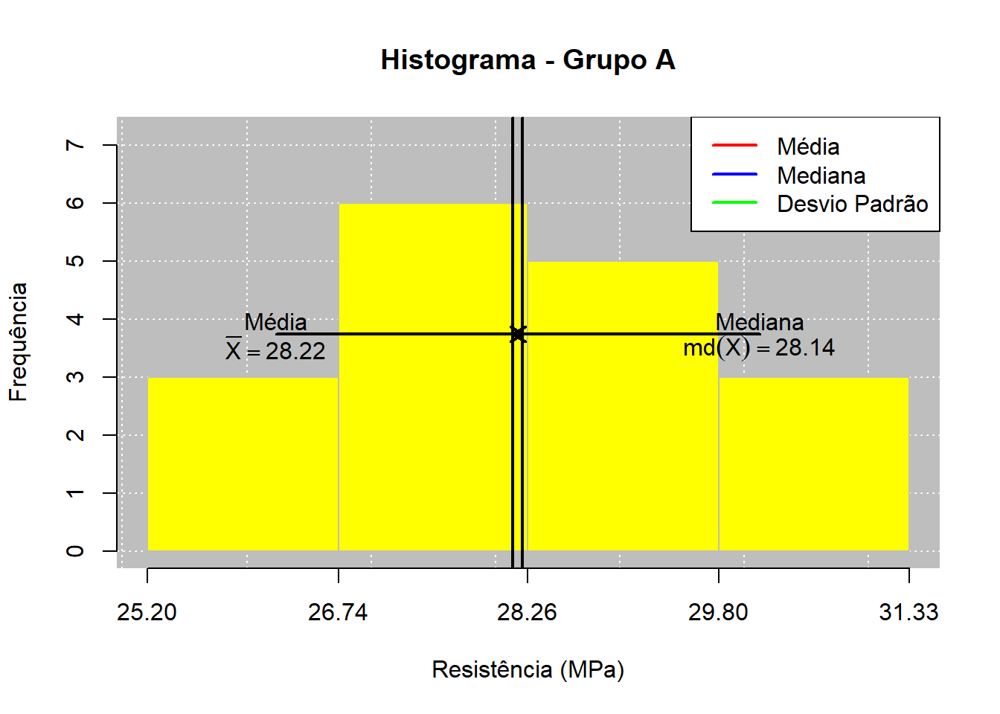
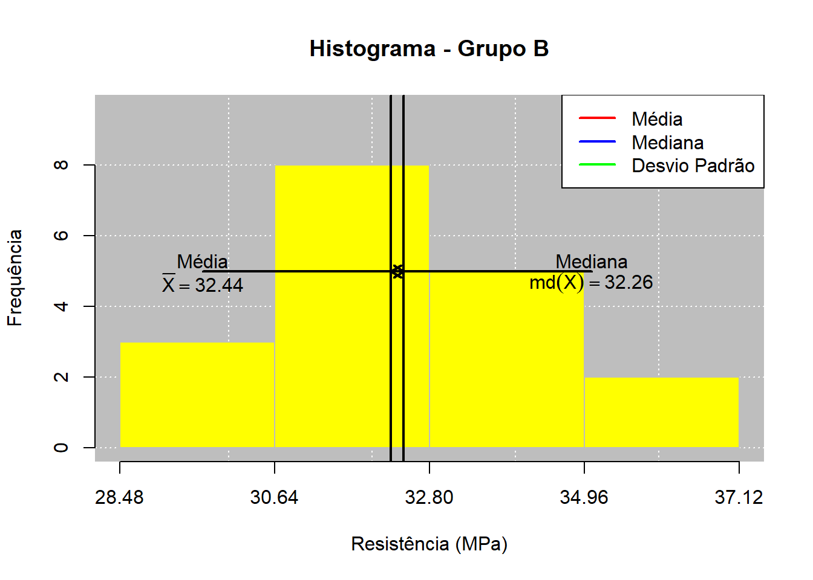
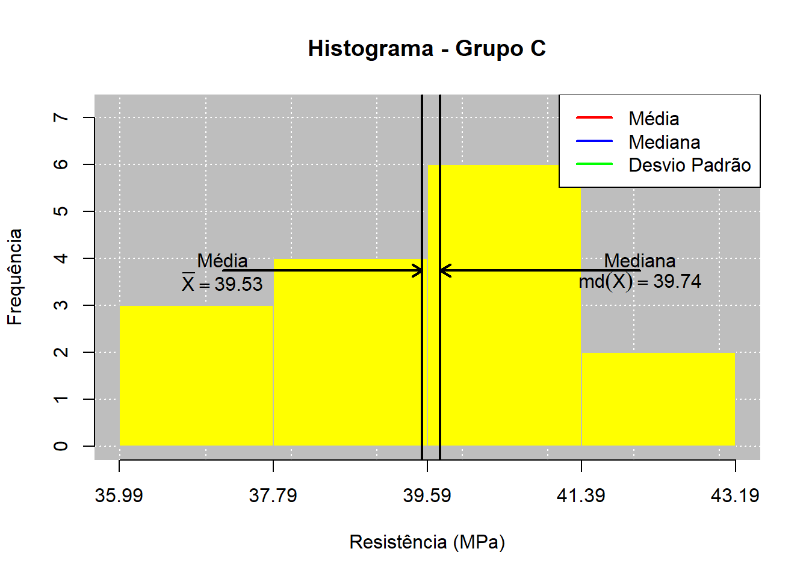
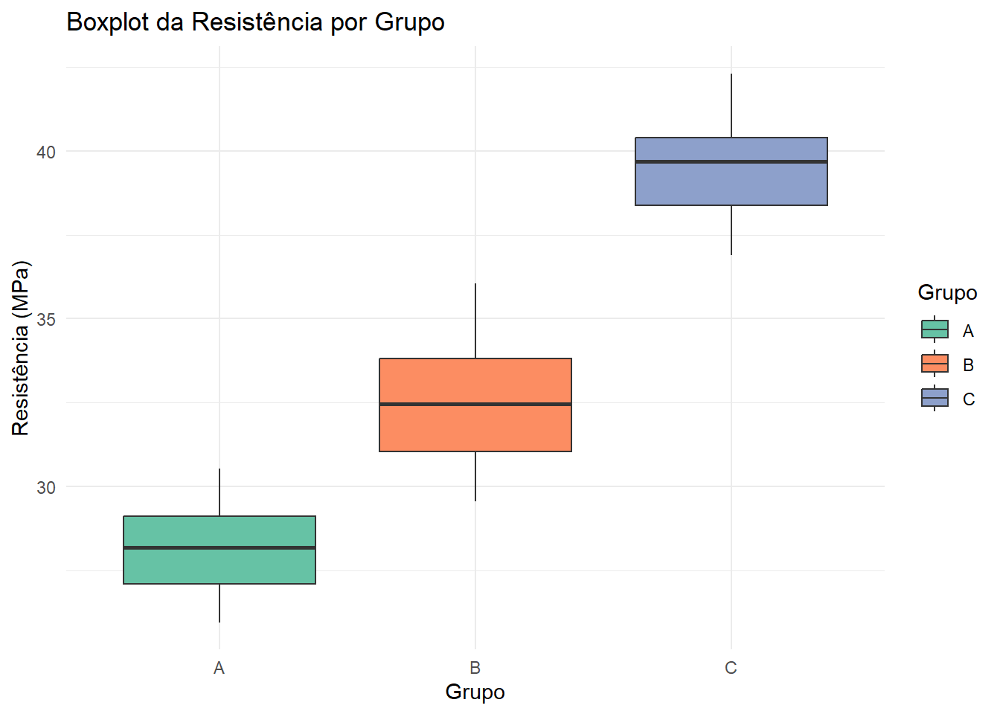

A Estatística é uma área fundamental para a análise, interpretação e tomada de decisão com base em dados. No contexto das Engenharias e Ciências, essa área permite transformar informações brutas em resultados organizados, facilitando a compreensão de fenômenos, processos e problemas reais. Por meio da estatística, podemos tomar decisões sobre uma população através da amostra, importante pois poupa tempo e dinheiro.
Nesse primeiro momento, trataremos de Estatística Descritiva, apresentando conceitos como população, amostra, variável, dados, coleta, organização, tabelas de frequência, gráficos, medidas de posição, medidas de dispersão, assimetria e curtose. Esses conteúdos são essenciais para compreender como os dados podem ser tratados e resumidos antes da aplicação de técnicas estatísticas mais avançadas.
Além da estatística em sua essência, com o avanço das tecnologias a estatística manual e braçal cedeu espaço para softwares com grande capacidade de processamento de dados, como por exemplo o R Studio, que utiliza a linguagem de programação R em um ambiente computacional voltado principalmente para estatística, análise de dados e construção de gráficos. De forma simples, pode-se dizer que o R é a linguagem e o ambiente que executa os cálculos, enquanto o RStudio é a ferramenta que organiza e facilita o uso dessa linguagem. O RStudio permite escrever comandos, executar linhas de código, visualizar resultados, criar gráficos, consultar ajuda e gerenciar projetos.
2 🎯 Objetivos
2.1 Objetivo geral
Resumir os principais conceitos apresentados nos quatro primeiros capítulos do livro Estatística & Probabilidade aplicada às Engenharias e Ciências escrito por Batista (2026) ; introduzir conceitos iniciais da linguagem R e do RStudio, por exemplo Sintaxe e Semântica; realizar uma aplicação prática unindo os 2 temas anteriores.
2.2 Objetivos específicos
Apresentar as definições iniciais da Estatística, incluindo população, amostra, variável e dado;
Explicar a importância da coleta, organização e apresentação dos dados;
Descrever as principais medidas de posição, como média, mediana e moda;
Apresentar as principais medidas de dispersão, como amplitude, variância, desvio padrão, coeficiente de variação e erro padrão da média;
Apresentar os conceitos de assimetria e curtose;
Explicar conceitos e ideias iniciais da linguagem R e do RStudio. Passos iniciais, aplicações e sua sintaxe e Semântica.
Relacionar todos os itens e conceitos acima e realizar uma aplicação prática mesclando a estatística descritiva com a linguagem R e RStudio.
3 ⚙️ Metodologia
Este relatório foi elaborado a partir da leitura e análise dos quatro primeiros capítulos do livro digital Estatística & Probabilidade aplicada às Engenharias e Ciências, da visualização e compreensão dos vídeos do Curso R Básico 2024 e conteúdos auxiliares como o R Studio, Pacote Leem e Rmarkdown. A metodologia utilizada consistiu em identificar os principais conceitos, definições e aplicações sintetizando as ideias centrais de forma objetiva e organizada. A estrutura do relatório foi organizada em introdução, objetivos, metodologia, resultados e discussão, conclusão e referências. O foco foi produzir um resumo claro, com linguagem acadêmica simples e adequada.
3.1 Capítulo 1: Definições Gerais da Estatística e técnicas de somatórios
O primeiro capítulo apresenta a Estatística como uma ciência voltada à coleta, organização, descrição, análise e interpretação de dados. Segunda Batista (2024) na era digital há uma grande produção de informações, especialmente em ambientes como redes sociais, plataformas digitais e sistemas corporativos, sendo necessário utilizar métodos estatísticos para compreender esses dados e auxiliar na tomada de decisões.
O capítulo diferencia três grandes áreas da Estatística: Estatística Descritiva, Probabilidade e Estatística Inferencial. A Estatística Descritiva reúne técnicas de coleta, organização, tabulação, representação gráfica e cálculo de medidas que resumem os dados. A Probabilidade é apresentada como a teoria matemática voltada ao estudo da incerteza em fenômenos aleatórios. Já a Estatística Inferencial busca utilizar informações de uma amostra para tirar conclusões sobre uma população.
Também são introduzidos conceitos básicos como população, amostra, variável e dado. - População é o conjunto de elementos de interesse da pesquisa e amostra é um subconjunto dessa população; - Variável é a característica que se deseja estudar, sendo dividida em Qualitativa (Nomina e ordinal) e Quantitativa (Discreta e Contínua); - Dado é o valor observado dessa característica em cada elemento.
O capítulo ainda relaciona a Estatística ao método científico, destacando etapas como identificação do problema, formulação de hipóteses, revisão de literatura, coleta de dados, análise e apresentação dos resultados.
3.2 Capítulo 2: Coleta, organização e apresentação dos dados
O segundo capítulo trata da etapa posterior à definição da população e das variáveis de interesse: a coleta e organização dos dados. O autor explica que os dados coletados sem ordenação ou arranjo sistemático são chamados de dados brutos. Quando esses dados são organizados em ordem crescente ou decrescente, passam a ser chamados de dados em rol ou dados elaborados.
Um dos principais pontos do capítulo é a construção de tabelas de frequência. A frequência absoluta indica quantas vezes determinado valor aparece no conjunto de dados, enquanto a frequência relativa representa essa ocorrência em relação ao total de observações. A frequência percentual transforma a frequência relativa em porcentagem, facilitando a interpretação. O capítulo também apresenta frequências acumuladas, que permitem responder perguntas como “quantos valores estão abaixo de determinado ponto?” ou “quantos valores estão acima de determinado ponto?”.
O capítulo 2 apresenta como utilizar o pacote leem para tabular dados e também como instalar o pacote propriamente dito no RStudio.
Além das tabelas, o capítulo discute o agrupamento de variáveis quantitativas contínuas em intervalos de classe. Esse procedimento é importante quando há muitos dados ou quando os valores não são naturalmente discretos. O autor apresenta critérios para definir o número de classes, a amplitude total e a amplitude de cada classe, mostrando a importância da organização dos dados para facilitar sua leitura, interpretação e apresentação.
É apresentado também representações gráficas, ferramentas que facilitam a visualização mesmo em situações de complexidade, ajudando assim na análise e compreensão. São citados tipos de gráficos como gráfico de barras, histogramas, gráfico de linhas, gráfico de dispersão. É mencionado também, no ambiente R, o pacote “graphics” e o “ggplot2” que auxiliam no tratamento dos dados e criação dos gráficos no RStudio.
3.3 Capítulo 3: Medidas de Posição
O terceiro capítulo apresenta as medidas de posição, também chamadas de medidas de tendência central. Essas medidas são utilizadas para resumir um conjunto de dados por meio de valores representativos, indicando em torno de qual ponto os dados se concentram. As principais medidas estudadas são a média aritmética, a mediana e a moda.
A média aritmética, populacional (Equação 1) e amostral (Equação 2) é apresentada como uma das medidas mais conhecidas e utilizadas. Ela representa um ponto de equilíbrio dos dados e pode ser calculada tanto para dados não agrupados quanto para dados agrupados. No entanto, o capítulo destaca que a média é sensível a valores discrepantes, ou seja, valores muito distantes da maioria das observações podem alterar significativamente seu resultado. Para esses casos sugere-se a utilização da média aparada(Equação 3), onde é excluído do cálculo o valor mínimo e máximo de um conjunto de dados.
\[
\mu = \frac{1}{N}\sum_{i=1}^{N} x_i \tag{1}
\]
\[
\bar{x} = \frac{1}{n}\sum_{i=1}^{n} x_i \tag{2}
\]\[
\bar{x}_{trim} =
\frac{1}{n - 2k}
\sum_{i=k+1}^{n-k} x_{(i)} \tag{3}
\] A mediana é definida como o valor central de um conjunto de dados ordenado (Equações 4 e 5). Ela divide o conjunto em duas partes, de modo que aproximadamente 50% dos valores fiquem abaixo e 50% fiquem acima. Por considerar a posição dos dados e não diretamente seus valores extremos, a mediana é menos influenciada por dados discrepantes/extremos. Quando há dados agrupados em intervalos de classes o cálculo utiliza outros parâmetros, como limite inferior e superior da classe, frequência acumulada da classe anterior à classe em questão e frequência absoluta da classe mediana.
\[
\begin{equation}
\text{Mediana} =
\begin{cases}
x_{(\frac{N+1}{2})}, & \text{se } N \text{ ímpar} \\
\frac{x_{(\frac{N}{2})} + x_{(\frac{N}{2}+1})}{2}, & \text{se } N \text{ par}
\end{cases}
\tag{4}
\end{equation}
\]\[
\begin{equation}
\tilde{x} =
\begin{cases}
x_{(\frac{n+1}{2})}, & \text{se } n \text{ ímpar} \\
\frac{x_{(\frac{n}{2})} + x_{(\frac{n}{2}+1})}{2}, & \text{se } n \text{ par}
\end{cases}
\tag{5}
\end{equation}
\] A moda, por sua vez, representa o valor mais frequente em um conjunto de dados e pode ser aplicada a diferentes tipos de variáveis, inclusive qualitativas. Vale destacar que, um conjunto de dados poderá ter mais de uma moda, isto é, se observarmos dois valores mais frequentes e iguais, teremos uma distribuição bimodal. Da mesma forma que a mediana, a moda não é influenciada por valores extremos, desde que estes não pertençam a classe modal.
O capítulo também mostra que média, mediana e moda podem oferecer interpretações diferentes de um mesmo conjunto de dados. Em distribuições mais simétricas, essas medidas tendem a se aproximar. Em distribuições assimétricas ou com valores extremos, elas podem apresentar diferenças importantes, sendo necessário escolher a medida mais adequada conforme a natureza dos dados e o objetivo da análise.
Por fim é apresentado como o Pacote leem pode contribuir para o cálculo rápido das medidas média, mediana e moda utilizando as funções mean(), median() e mfreq(), respectivamente.
3.4 Capítulo 4: Medidas de dispersão
O quarto capítulo complementa o estudo das medidas de posição ao apresentar as medidas de dispersão. É apresentado que conjuntos de dados diferentes podem possuir a mesma média, mas apresentar comportamentos distintos. Isso demonstra que apenas uma medida central não é suficiente para caracterizar adequadamente os dados.
A primeira medida apresentada é a amplitude (Equação 6), definida como a diferença entre o maior e o menor valor do conjunto. Embora seja simples de calcular e esteja na mesma unidade da variável, a amplitude possui limitações, pois considera apenas os valores extremos e ignora o comportamento dos demais dados. Por isso, a amplitude pode não representar adequadamente a variabilidade total de um conjunto.
\[AT = \max(X) - \min(X) \tag{6}\] Em seguida, o capítulo apresenta a variância (Equações 7 e 8), que mede a dispersão dos dados em relação à média por meio dos desvios ao quadrado. A variância considera todos os valores do conjunto, sendo uma medida mais completa do que a amplitude. Entretanto, sua unidade fica elevada ao quadrado, o que pode dificultar a interpretação prática. Por esse motivo, utiliza-se também o desvio padrão (Equações 9 e 10), que corresponde à raiz quadrada da variância e retorna a medida de dispersão para a mesma unidade da variável analisada.
\[s^2 = \frac{1}{n-1} \sum_{i=1}^{n} (x_i - \bar{x})^2 \tag{8}\]\[\sigma = \sqrt{\sigma^2} \tag{9}\]\[s = \sqrt{s^2}\tag{10}\] É importante saber que quanto mais próximo de zero a variância e o desvio padrão for, mais concentrado e melhor representado os dados estão com relação à média. Além disso, para utilizar variância e desvio padrão para comparar grupos de dados, temos que verificar se a média desses grupos são iguais e se as observações estão na mesma unidade de mensuração.
O capítulo também aborda o coeficiente de variação (Equações 11 e 12), uma medida relativa de dispersão que expressa o desvio padrão em relação à média, geralmente em porcentagem. Essa medida permite comparar a variabilidade entre grupos diferentes, desde que a variável analisada possua uma escala adequada. Por fim, o autor apresenta o erro padrão da média (Equações 13 e 14), que está relacionado à precisão com que a média amostral estima a média populacional e será importante em conteúdos posteriores, como estimação e testes de hipóteses.
Além das medidas de posição e dispersão, a análise estatística também pode considerar medidas relacionadas ao formato da distribuição dos dados, como a assimetria (Equação 15) e a curtose (Equação 16). Essas medidas ajudam a compreender não apenas onde os dados se concentram e o quanto variam, mas também como os valores estão distribuídos ao redor da média. Segundo Bussab e Morettin (2024), a assimetria indica o grau de afastamento de uma distribuição em relação à simetria, ou seja, descreve o equilíbrio da distribuição. A curtose ajuda a avaliar o peso das caudas e a ocorrência de valores extremos.
\(g_2 = 0\) (Mesocúrtica): Forma idêntica à Distribuição Normal.
\(g_2 > 0\) (Leptocúrtica): Pico mais elevado e caudas mais pesadas (maior probabilidade de outliers / valores extremos).
\(g_2 < 0\) (Platicúrtica): Distribuição mais achatada e caudas mais leves (menor probabilidade de outliers).
Uma distribuição é considerada aproximadamente simétrica quando os dados se distribuem de forma semelhante dos dois lados de uma medida central. Nesse caso, média, mediana e moda tendem a apresentar valores próximos. Quando a distribuição possui uma cauda mais alongada para a direita, ocorre assimetria positiva. Nesse tipo de situação, alguns valores altos podem puxar a média para cima. Quando a cauda é mais alongada para a esquerda, ocorre assimetria negativa, indicando a presença de valores baixos que influenciam a distribuição.
A análise da assimetria é importante porque permite avaliar se a média representa bem o conjunto de dados. Em distribuições muito assimétricas, a média pode ser fortemente afetada por valores extremos, sendo recomendável observar também a mediana e a moda. Dessa forma, a assimetria se relaciona diretamente ao conteúdo do Capítulo 3 do livro, no qual são discutidas as medidas de posição e suas diferentes interpretações.
A curtose está relacionada ao grau de concentração dos dados em torno do centro da distribuição e ao peso das caudas. De forma geral, a curtose ajuda a identificar se uma distribuição apresenta maior concentração de valores próximos à média ou maior ocorrência de valores extremos. Uma distribuição com curtose mais elevada tende a indicar maior presença de valores extremos ou caudas mais pesadas. Já uma curtose menor indica uma distribuição mais achatada, com menor concentração central ou caudas menos intensas.
Em suma, assimetria e curtose complementam as medidas de dispersão estudadas no Capítulo 4. Enquanto a variância, o desvio padrão e o coeficiente de variação indicam o nível de variabilidade, a assimetria e a curtose ajudam a interpretar o formato da distribuição e a presença de valores extremos.
3.6 Introdução básica ao R (linguagem e software)
O R é uma linguagem de programação e um ambiente computacional voltado principalmente para estatística, análise de dados e construção de gráficos. De acordo com R Core Team (2026), o projeto R apresenta o software como um ambiente gratuito para computação estatística e gráficos, disponível para diferentes sistemas operacionais. O R não é um software fechado com funções engessadas, mas um ambiente de software livre e de código aberto para computação estatística e gráfica.
Para utilizar o R, é necessário instalar inicialmente o programa R, que executa os comandos estatísticos. A instalação pode ser feita pelo site oficial do projeto R, por meio da rede CRAN. Após instalar o R, recomenda-se instalar também o RStudio, que é uma interface de desenvolvimento integrada criada pela empresa Posit (2026). O RStudio facilita o uso do R, pois reúne editor de código, console, gráficos, ambiente de trabalho, arquivos, pacotes e ajuda integrada em uma única interface.
De forma simples, pode-se dizer que o R é a linguagem e o ambiente que executa os cálculos, enquanto o RStudio é a ferramenta que organiza e facilita o uso dessa linguagem. O RStudio permite escrever comandos, executar linhas de código, visualizar resultados, criar gráficos, consultar ajuda e gerenciar projetos, além de possuir pacotes com integração à internet, por exemplo o HTML, para criação de relatórios, apresentações e outros diversos itens.
A linguagem R, assim como outras linguagens de programação, possui sintaxe e semântica. A sintaxe está relacionada à forma correta de escrever os comandos. Em outras palavras, a sintaxe define as regras de escrita que o R reconhece. Se um comando for escrito de forma incorreta, o programa poderá apresentar erro. A semântica, por outro lado, diz respeito ao significado dos comandos. Ou seja, enquanto a sintaxe trata da forma correta de escrever, a semântica trata do que aquele comando representa ou executa.
3.6.1 Princípios do R
A linguagem R possui três princípios derivados dos conceitos de John Chambers (criador da linguagem S, na qual o R se baseia):
Princípio do Objeto – “Tudo o que existe no R é um objeto”:
Semântica: O R armazena dados e estruturas na memória virtual na forma de objetos nativos (existem 24 estruturas básicas nativas no R) ;
Estrutura de Dados vs. Objeto Nativo: Estruturas populares como data.frame ou tibble não são objetos nativos raiz, mas sim estruturas construídas sobre o objeto nativo lista (list);
Todo objeto possui três propriedades intrínsecas: tipo (typeof()), modo (mode()) e comprimento (length()).
Princípio da Função - “Tudo o que acontece no R é uma chamada de função”:
Atribuição de Variáveis: O operador recomendado para associar nomes a objetos é a flecha <- (ex: x <- 10).
Princípio da Interface - “O R se comunica com outras linguagens”:
3.6.2 Diferenciação Sintática e Operacional: R vs. RStudio
R (Linguagem/Interpretador): O motor de execução onde os códigos são de fato processados e avaliados no console.
RStudio (IDE): A interface gráfica de desenvolvimento. Organiza o trabalho em 4 quadrantes:
1º Quadrante – Script do R - Área utilizada para escrever, editar e salvar os códigos em arquivos com extensão .R;
2º Quadrante – Console do R - Local onde os comandos são efetivamente executados e os resultados aparecem. Também permite digitar comandos diretamente, porém esses comandos não ficam organizados em um script, a menos que sejam salvos separadamente;
3º Quadrante – Ambiente Global - Exibe os objetos criados durante a análise, como vetores, tabelas, conjuntos de dados, funções e resultados de cálculos. Também apresenta o histórico dos comandos executados e permite acompanhar os dados armazenados na sessão atual;
4º Quadrante – Área de plotagem - Utilizado para visualizar gráficos, consultar arquivos e pastas, gerenciar pacotes e acessar a documentação de ajuda das funções.
3.6.3 Sintaxe Básica
Nomes Sintáticos: O R diferencia maiúsculas de minúsculas e possui palavras reservadas que não podem ser usadas como nomes (TRUE, FALSE, if, else, for, function, NULL, NA). No R nomes não podem começar por número nem por ponto seguido de número.
Atribuição vs. Igualdade: O operador idiomático e correto para associar nomes a objetos é a seta <- (atribuição). O sinal de igualdade (=) é reservado para a definição de argumentos dentro de chamadas de funções
Comentários: Qualquer linha ou trecho iniciado pelo caractere cerquilha (#) é interpretado como comentário e ignorado pelo interpretador;
3.6.4 O Conceito Semântico de Escopo Léxico (Lexical Scoping)
Mecanismo de Busca de Objetos: Uma das principais diferenças semânticas entre o R e a linguagem S nativa é que o R utiliza escopo léxico, ou seja, quando uma função busca por uma variável/objeto não definido localmente no seu próprio corpo (environment local), ela procura recursivamente nos ambientes superiores (enclosing environments) onde a função foi criada, até chegar ao Global Environment.
3.6.5 Objetos e Estrutura de Dados – 1º Princípio do R
Objetos e estruturas de dados constituem um dos fundamentos da linguagem R. No R, os dados, as funções e outros elementos computacionais são representados como objetos. Esses objetos podem ser organizados em diferentes estruturas, como vetores, matrizes, arrays, listas e quadros de dados, de acordo com a natureza, a dimensionalidade e a forma de organização das informações.
3.6.5.1 Atributos Intrínsecos (mode e length):
Todo objeto possui obrigatoriamente modo/tipo e comprimento.
mode(): Identifica a tipagem na perspectiva da linguagem S (ex: numeric, character, logical, function).
typeof(): Identifica a tipagem na perspectiva da linguagem C subjacente (ex: integer, double, closure, symbol).
length(): Retorna a dimensão/quantidade de elementos do objeto.
A função attributes() exibe atributos adicionais (como nomes e dimensões), mas omite os intrínsecos.
3.6.5.2 Estrutura Interna vs. Estrutura Externa
Estrutura Interna (Objetos Raiz em C): Existem nativamente apenas 24 tipos básicos de objetos no submundo do R (ex: intSXP, REALSXP, LGLSXP, VECSXP). Apenas os desenvolvedores do R Core Team podem criar novos objetos nativos.
Estrutura Externa (Estruturas de Dados): É a forma como o objeto é apresentado ao usuário ou no paradigma de Orientação a Objetos (vetores, matrizes, data.frames, tibbles).
3.6.5.3 Coerção Implícita e Explícita
Coerção Implícita: Em vetores atômicos (que devem ser homogêneos), elementos de diferentes tipos são convertidos automaticamente segundo a hierarquia de precedência: logical \(\to\) integer \(\to\) double \(\to\) character.
Coerção Explícita: Realizada via funções com prefixo as. (ex: as.numeric(), as.character(), as.factor()).
3.6.5.4 Vetores
Vetores Atômicos são estruturas unidimensionais homogêneas. Os tipos principais são:
Lógico (logical) – TRUE / FALSE;
Inteiro (integer),
Real de dupla precisão (double);
Caractere (character);
Complexo (complex);
Bruto (raw).
Com relação à sintaxe de vetores do tipo inteiros, para forçar um número como integer puro em vez de double, utiliza-se o sufixo L (ex: 1L, 10L).
Já com relação à semântica de valores especiais (NA, NaN, Inf, NULL), têm-se
NA (Not Available): Representa dado ausente/faltante. Ocupa posição na estrutura e preserva o comprimento do vetor (length() inclui os NA). Possui tipagens específicas internamente (NA_integer_, NA_real_, NA_character_).
NaN (Not a Number): Representa indeterminações matemáticas (ex: 0/0, Inf - Inf). Internamente é do tipo double.
Inf / -Inf: Representam infinito positivo e negativo em operações numéricas de ponto flutuante.
NULL: Representa a ausência de objeto (vazio absoluto). Não ocupa espaço nem altera o comprimento de vetores concatenados (length(c(1, 2, NULL)) retorna 2).
3.6.5.5 Matrizes
Em se tratando de semântica, uma matriz não é um objeto nativo diferente na memória; é um vetor atômico ao qual foi adicionado o atributo de dimensão dim (um vetor numérico de 2 elementos: c(linhas, colunas)):
matrix(data, nrow, ncol, byrow = FALSE): Transforma o vetor de dados na estrutura matricial.
Preenchimento Padrão por Colunas: Por padrão (byrow = FALSE), o R preenche a matriz coluna por coluna. Se byrow = TRUE, o preenchimento é feito linha por linha.
Funções cbind() e rbind(): Combinam vetores ou matrizes acrescentando novas colunas ou linhas, respectivamente.
3.6.5.6 Arrays
O array é uma estrutura de dados multidimensional (funciona como um conjunto ou empilhamento de matrizes). Internamente, o array nada mais é do que um vetor atômico contínuo na memória virtual. O que altera sua apresentação e comportamento externo é a presença do atributo de dimensão dim.
Enquanto uma matriz possui um atributo dim de comprimento 2 (c(linhas, colunas)), um array possui um atributo dim com comprimento igual a 3 ou mais (c(linhas, colunas, camadas/matrizes)).
3.6.5.7 Listas
Ao contrário dos vetores atômicos (que exigem estrita homogeneidade de tipos), a lista (list) permite armazenar elementos de naturezas e tipos de objetos completamente distintos (vetores, matrizes, funções, expressões, quadros de dados e outras listas). Cada elemento de uma lista atua como um ponteiro que aponta para o endereço do objeto correspondente na memória.
3.6.5.8 Quadro de Dados (Data Frames)
O quadro de dados (data frame) é internamente uma lista de vetores de mesmo comprimento, pertencente à classe S3 “data.frame”. Simula o formato clássico de tabela/planilha eletrônica, ou seja, cada coluna representa uma variável, que pode ter tipo diferente das outras colunas, mas homogêneo internamente, e as linhas correspondem às observações.
Vale destacar que todos os vetores/colunas que compõem um data frame devem obrigatoriamente possuir o mesmo número de elementos (linhas).
3.6.6 Funções – 2º Princípio do R
Como apresentado acima e vinculado ao 2º Princípio Chambers (2016), apesar de udo que acontece no R ser uma chamada de função, a função é um objeto como estrutura definida como qualquer outro. Entendemos que uma função no R é um objetivo do tipo:
closure: Funções convencionais criadas pelo usuário ou por pacotes através da instrução function().
special e builtin: Funções primitivas de baixo nível desenvolvidas pelo R Core Team, geralmente escritas em C para alto desempenho, invocadas via interfaces como .Primitive() ou .Internal().
Em programação, uma função expande a definição matemática simples, representando um conjunto estruturado de rotinas/passos que recebe entradas (inputs), processa regras e retorna uma saída (output). Essas funções podem ser divididas em três componentes:
formals(f): Os argumentos formais de entrada e seus valores padrão.
body(f): O corpo executável contendo o código/algoritmo da função.
environment(f): O ambiente de criação/envolvente que determina o escopo léxico de busca de variáveis.
Já com relação às chamadas de funções, essas podem ocorrer de 3 formas:
Aninhada: Chamadas compostas do tipo sqrt(var(x)), avaliadas internamente de dentro para fora.
Intermediária: Atribuição de etapas a variáveis temporárias no ambiente global.
Operador Pipe (|>) Nativo / Magrittr (%>%): Direciona a saída do comando à esquerda como a primeira entrada da função à direita (x |> var() |> sqrt()), simplificando a leitura e eliminando a necessidade de objetos intermediários.
3.6.6.1 Estruturas de Controle
As estruturas de controle, também chamadas de estruturas de controle de fluxo, servem para determinar quando, quantas vezes e em quais condições um trecho de código será executado. Na prática, permitem automatizar decisões e tarefas repetitivas em um programa.
if e else: executam uma ação dependendo de uma condição.
ifelse(): aplica uma decisão condicional aos elementos de um vetor.
switch(): seleciona uma ação entre várias alternativas.
for: repete uma operação para cada elemento de uma sequência.
while: repete uma operação enquanto determinada condição for verdadeira.
repeat: repete continuamente um bloco até que uma condição de interrupção seja alcançada.
break: interrompe uma repetição.
next: ignora a iteração atual e segue para a próxima.
3.6.7 Princípio da Interface – 3º Princípio do R
Uma grande vantagem do R é possuir uma arquitetura Aberta, ou seja, o R traz em sua estrutura nativa suporte para comunicar-se com linguagens de baixo nível (C e Fortran) e com a linguagem S para rotinas de alto desempenho computacional, abaixo exemplo:
Python (reticulate): Permite executar scripts em Python e invocar suas funções e bibliotecas diretamente na sessão do R.
C++ (Rcpp): Compila código em C/C++ e o disponibiliza para chamada nativa no R com alto desempenho.
Interfaces Gráficas (tcltk): Utiliza o pacote nativo tcltk para gerar janelas, botões e controles interativos de desktop.
Geração de Saídas Dinâmicas: A capacidade de interface do R estende-se à geração de documentos, apresentações (via reveal.js, R Markdown e Quarto) e aplicações web estáticas ou dinâmicas.
3.6.8 Gerenciamento de Projetos, Dados e Pacotes no R
3.6.8.1 Arquivos .RData e .Rhistory
RData: Arquivo binário responsável por armazenar a imagem do ambiente de trabalho (workspace), contendo todos os objetos e vinculações criadas e presentes no Global Environment durante uma sessão.
Rhistory: Arquivo de texto plano que armazena o histórico cronológico de todas as linhas de comando executadas no console durante a sessão.
3.6.8.2 Criando e Salvando um Script
Um Script é um arquivo de texto simples com extensão .R que guarda a sequência estruturada de linhas de comando que serão enviadas e avaliadas pelo interpretador do R. É a forma padronizada de documentar e reexecutar códigos, tornando o usuário independente dos salvamentos automáticos do .RData / .Rhistory.
Para executá-lo basta utilizar Ctrl + Enter (no RStudio) ou botão Run. Dessa forma, a linha selecionada ou o bloco de código do editor é enviada para execução no console.
Em se tratando de semântica, o editor de scripts não interpreta o código por si só; ele apenas armazena as instruções e as envia para o console, onde o interpretador processa a chamada.
Por fim, com relação a boas práticas na escrita de código, recomenda-se a utilização de comentários através do caractere # para documentar o raciocínio das rotinas e consultar futuras, sendo que o interpretador ignora qualquer instrução escrita após a cerquilha e não o utiliza como executável. Além disso, recomenda-se adotar nomes curtos, concisos e descritivos em caixa baixa, evitar acentuação, cedilhas ou caracteres especiais que possam falhar em diferentes codificações de texto para garantir compatibilidade entre diferentes sistemas operacionais (Windows, Linux, macOS).
3.6.8.3 Importação e Exportação de Dados
Vai de encontro e aplica o terceiro princípio da linguagem R (Interface) para ler dados armazenados em disco (arquivos locais, planilhas) ou fontes remotas (APIs, páginas web).
Para importar dados utiliza-se a função read.table() para ler arquivos de texto delimitados (TXT, CSV) e os converter automaticamente para a estrutura de dados data.frame. Deve-se utilizar também o pacote readxl para leitura de planilhas nos formatos proprietários do Excel (.xls, .xlsx), permitindo selecionar abas específicas (sheets).
Para exportar dados utiliza-se funções write.table() / write.csv() para gravar objetos do R em arquivos de texto no disco. Além disso, deve-se utilizar o pacote writexl (write_xlsx()) para exportar data frames ou listas de data frames, onde cada elemento vira uma aba para arquivos Excel .xlsx. e o pacote xtable (xtable()) para converter a estrutura de dados em tabelas formatadas em código LaTeX/HTML para inclusão direta em relatórios acadêmicos.
3.6.8.4 Pacotes no R
Pacotes são “contêineres” padronizados que organizam funções, bases de dados, documentação e códigos compilados em C/Fortran de forma modular. O CRAN (Comprehensive R Archive Network) é o repositório oficial e auditado do R. Os pacotes submetidos passam por testes rigorosos de compatibilidade antes de ficarem disponíveis publicamente. Por sua vez, o GitHub é utilizado para hospedagem de código-fonte em desenvolvimento ativo ou versões experimentais, instaladas via devtools::install_github().
Para sua instalação basta utilizar install.packages(“pacote”) e o RStudio baixa, compila e instala pacotes disponíveis no CRAN. Caso haja duvidas sobre os pacotes e suas funções basta consultar a ajuda via ?funcao ou help(“funcao”) para visualizar argumentos, descrição e exemplos executáveis.
3.6.9 Síntese
R constitui uma linguagem e um ambiente computacional livre, voltado à análise estatística, ao tratamento de dados e à produção de gráficos. Sua utilização é facilitada pelo RStudio, que integra ferramentas para escrita de scripts, execução de comandos, visualização de resultados e gerenciamento de projetos.
A compreensão da sintaxe, da semântica e do escopo léxico é fundamental para a elaboração e a interpretação correta dos códigos.
Os princípios do objeto, da função e da interface explicam como os dados são representados, como as operações são executadas e como o R se comunica com outras tecnologias.
Vetores, matrizes, arrays, listas e quadros de dados possibilitam organizar informações conforme sua natureza e dimensionalidade.
As funções e estruturas de controle permitem modularizar procedimentos, automatizar decisões e executar tarefas repetitivas.
Os scripts, a importação e exportação de dados e o gerenciamento de pacotes favorecem a organização e a reprodutibilidade das análises.
Assim, o conhecimento desses fundamentos permite utilizar o R de forma estruturada, eficiente e adequada ao desenvolvimento de análises e relatórios técnicos.
4 🏗️ Estudo de Caso, Resultados e discussões
4.1 Contexto do Projeto
A obra em questão consiste na execução de um muro de arrimo em concreto armado, com função estrutural de contenção de um talude de mineração (cava de extração de minério de ferro). O muro possui altura média de 12 m, extensão linear de 180 m e volume total estimado de concreto de 2.400 m³.
A resistência característica à compressão (fck) de projeto especificada no memorial de cálculo é de 30 MPa (30.000 kPa), para que o elemento suporte os empuxos de terra, sobrecargas de equipamentos e ações hidrostáticas.
O concreto foi dosado em usina própria da mineradora, com traço 1:2,5:3,0 (cimento:areia: brita), relação a/c = 0,48 e adição de superplastificante à base de policarboxilato para garantir trabalhabilidade (slump de 120 ± 20 mm) mesmo com alta densidade de armadura.
4.2 Plano de Amostragem e Produção
A concretagem do muro foi dividida em 3 dias consecutivos de produção, denominados Grupo A, B e C, correspondentes a:
Grupo A (Dia 1 – 08/08/2026): concretagem da base e primeira elevação (1/3 do muro) – 17 corpos de prova.
Grupo B (Dia 2 – 09/08/2026): concretagem da segunda elevação (trecho central) – 18 corpos de prova.
Grupo C (Dia 3 – 10/08/2026): concretagem da coroa e fechamento superior – 15 corpos de prova.
Cada dia de produção correspondeu a um caminhão betoneira diferente (mesmo traço, mas com pequenas variações inerentes à umidade dos agregados e ao tempo de mistura), o que justifica a separação em grupos para fins de rastreabilidade.
4.3 Coleta e Preparação dos Corpos de Prova
Em cada dia de concretagem, foram moldados corpos de prova cilíndricos (dimensões: 10 cm × 20 cm), conforme prescrições da NBR 5738. A amostragem foi feita no ponto de descarga do caminhão betoneira, imediatamente antes do lançamento no muro, seguindo o critério de 1 corpo de prova a cada 50 m³ de concreto lançado (excedendo o mínimo normativo para garantir robustez estatística).
Os corpos de prova foram:
Desmoldados após 24 horas;
Cura úmida em câmara úmida (temperatura 23 ± 2 °C e umidade relativa ≥ 95%) por 7 dias;
Mantidos em condição ambiente do laboratório até a data do ensaio (aos 28 dias).
Os resultados obtidos podem ser observados na tabela a seguir:
Código
library(knitr)library(kableExtra)corposdeprova <-read.csv("corposdeprova.csv")# Número de colunas (para aplicar centralização em todas)n_col <-ncol(corposdeprova)kable(corposdeprova, caption ="Dados dos Corpos de Prova",booktabs =TRUE,align =rep("c", n_col)) %>%# garante todas as colunas centralizadaskable_styling(bootstrap_options =c("striped", "hover", "condensed"),full_width =FALSE,position ="center") %>%# centraliza a tabela na páginacolumn_spec(1:n_col, extra_css ="text-align: center;") %>%# força centralizaçãoscroll_box(width ="100%", height ="400px")
Dados dos Corpos de Prova
Grupo
Resistencia_Mpa
A
27.85
A
26.43
A
29.12
A
28.56
A
25.97
A
30.21
A
27.34
A
26.88
A
28.90
A
29.67
A
27.11
A
28.44
A
26.05
A
30.55
A
29.83
A
27.72
A
28.19
B
31.45
B
30.87
B
33.22
B
29.56
B
34.10
B
32.68
B
30.99
B
33.55
B
31.24
B
35.67
B
29.88
B
32.41
B
34.23
B
30.12
B
33.89
B
31.76
B
36.05
B
32.54
C
38.22
C
39.67
C
37.45
C
40.11
C
36.89
C
41.23
C
38.54
C
39.98
C
37.12
C
40.67
C
42.30
C
38.77
C
41.89
C
39.45
C
40.02
Código
# Carregar dados dos três gruposdados_A <-read.csv("corposdeprova_A.csv")dados_B <-read.csv("corposdeprova_B.csv")dados_C <-read.csv("corposdeprova_C.csv")
# Aplicar a função para cada gruporesultados_A <-calcular_estatisticas(dados_A, "A")resultados_B <-calcular_estatisticas(dados_B, "B")resultados_C <-calcular_estatisticas(dados_C, "C")# Combinar todos os resultadosresultados_finais <-rbind(resultados_A, resultados_B, resultados_C)
5 Tabela de Estatísticas Descritivas
Código
knitr::kable(resultados_finais, caption ="Estatísticas Descritivas por Grupo",digits =2)
Estatísticas Descritivas por Grupo
Grupo
Media_MPa
Mediana_MPa
Desvio_MPa
Variancia_MPa2
CV_percent
Assimetria
Curtose
Min_MPa
Max_MPa
Amplitude_MPa
A
28.22
28.13
1.43
2.04
5.45
0.05
1.92
25.97
30.55
4.58
B
32.44
32.26
1.90
3.59
6.05
0.27
2.19
29.56
36.05
6.49
C
39.53
39.75
1.66
2.76
4.52
0.02
2.07
36.89
42.30
5.41
6 Análise Gráfica
6.1 Histogramas por Grupo
Código
gerar_histograma <-function(dados, nome_grupo) {# Converter para MPa (dividir por 1000) valores_MPa <- dados$Resistencia_kPa /1000 obj_leem <-new_leem(valores_MPa, variable =2) tab <-tabfreq(obj_leem)hist(tab, main =paste("Histograma - Grupo", nome_grupo),xlab ="Resistência (MPa)",ylab ="Frequência",col ="lightblue",border ="black")insert(tab, type ="mean", side ="left", lwd =2, col ="red")insert(tab, type ="median", side ="right", lwd =2, col ="blue")insert(tab, type ="sd", side ="right", lwd =2, col ="green")legend("topright", legend =c("Média", "Mediana", "Desvio Padrão"),col =c("red", "blue", "green"),lwd =2,bg ="white")}# Gerar histograma para cada grupogerar_histograma(dados_A, "A")

Código
gerar_histograma(dados_B, "B")

Código
gerar_histograma(dados_C, "C")

6.2 Boxplot Comparativo
Código
library(ggplot2)# Criar dataframe com todos os dados em MPadados_completos <-data.frame(Resistencia_MPa =c(dados_A$Resistencia_kPa /1000, dados_B$Resistencia_kPa /1000, dados_C$Resistencia_kPa /1000),Grupo =c(rep("A", nrow(dados_A)),rep("B", nrow(dados_B)),rep("C", nrow(dados_C))))# Criar boxplot em MPaggplot(dados_completos, aes(x = Grupo, y = Resistencia_MPa, fill = Grupo)) +geom_boxplot() +labs(title ="Boxplot da Resistência por Grupo",x ="Grupo",y ="Resistência (MPa)") +theme_minimal() +scale_fill_brewer(palette ="Set2")

7 Análise por Grupo
7.1 Grupo A
O grupo A apresentou resistência média de 28.22 MPa e mediana de 28.13 MPa. A proximidade entre essas duas medidas é um primeiro indício de que a distribuição é equilibrada e não está sendo fortemente afetada por valores extremos.
O coeficiente de assimetria foi 0.05. Como o resultado está muito próximo de zero, a distribuição do grupo A pode ser considerada aproximadamente simétrica.
O desvio padrão foi de 1.43 MPa, indicando o afastamento típico dos resultados em torno da média. A amplitude foi de 4.58 MPa, correspondente à diferença entre o maior resultado (30.55 MPa) e o menor (25.97 MPa).
O coeficiente de variação foi de 5.45%, indicando uma variabilidade relativamente pequena, valores abaixo de 10% são geralmente considerados indicativos de boa homogeneidade. O excesso de curtose foi de 1.92, sugerindo uma distribuição com caudas mais leves que a normal.
7.2 Grupo B
O grupo B apresentou resistência média de 32.44 MPa e mediana de 32.26 MPa. O coeficiente de assimetria foi 0.27, indicando uma leve tendência de cauda à direita.
O grupo B apresentou o maior desvio padrão (1.9 MPa) e a maior amplitude (6.49 MPa) entre os três grupos. O coeficiente de variação foi de 6.05%, sendo o maior entre os grupos.
O excesso de curtose foi de 2.19, indicando uma distribuição relativamente achatada.
7.3 Grupo C
O grupo C apresentou a maior resistência média: 39.53 MPa. Sua mediana foi de 39.75 MPa. O coeficiente de assimetria foi 0.02, praticamente igual a zero.
O desvio padrão foi de 1.66 MPa e a amplitude de 5.41 MPa. O coeficiente de variação foi de 4.52%, o menor entre os três grupos.
O excesso de curtose foi de 2.07.
8 Comparação Prática dos Grupos
A ordem das resistências médias foi: Grupo C > Grupo B > Grupo A.
As diferenças entre as médias foram:
Grupo B em relação ao A: 4.22 MPa, aproximadamente 14.95% superior;
Grupo C em relação ao A: 11.31 MPa, aproximadamente 40.08% superior;
Grupo C em relação ao B: 7.09 MPa, aproximadamente 21.86% superior.
Com relação à homogeneidade (CV):
Grupo C = 4.52% - Mais homogêneo
Grupo A = 5.45%
Grupo B = 6.05% - Menos homogêneo
Em resumo, o grupo C combina a maior resistência média com a menor dispersão relativa.
9 🧠 Considerações finais
Os quatro primeiros capítulos do livro fornecem uma base importante para o estudo da Estatística aplicada. Inicialmente, são apresentados conceitos fundamentais, como população, amostra, variável e dado. Em seguida, o livro aborda a organização dos dados por meio de tabelas, frequências e representações gráficas. Depois, são estudadas medidas que resumem os dados, como média, mediana e moda, além de medidas que avaliam a variabilidade, como amplitude, variância, desvio padrão, coeficiente de variação e erro padrão da média. Além disso, a inclusão dos conceitos de assimetria e curtose amplia a análise descritiva, pois permite compreender melhor o formato da distribuição dos dados complementando as medidas de posição e dispersão e oferecendo uma visão mais completa sobre o comportamento dos dados.
A introdução ao R mostra a importância do uso de ferramentas computacionais na Estatística. O R, em conjunto com o RStudio, permite realizar cálculos, organizar dados, construir gráficos e aplicar técnicas estatísticas com eficiência. Além disso, entender a sintaxe e a semântica do R é essencial para escrever comandos corretamente e interpretar o significado das operações realizadas. Assim, o aprendizado dos conceitos teóricos aliado ao uso de softwares estatísticos contribui para uma formação mais completa e aplicada, especialmente nas áreas de Engenharia e Ciências.
Conclui-se, com base na Estatística Descritiva, que o grupo C apresentou a maior resistência média e o menor coeficiente de variação, enquanto o grupo B apresentou resistência superior à do grupo A, mas também a maior dispersão. Entretanto, essas medidas permitem apenas organizar, resumir e comparar os dados observados, não sendo suficientes para generalizar os resultados ou tomar decisões sobre a população. Para verificar se as diferenças encontradas são estatisticamente significativas, torna-se necessária a aplicação da Estatística Inferencial, por meio de métodos como intervalos de confiança, testes de hipóteses e análise de variância. A decisão sobre o atendimento aos requisitos do projeto também deve considerar a resistência especificada, a idade de rompimento, o material, o plano de amostragem, a quantidade de exemplares e os critérios da norma técnica aplicável. Essas análises serão abordadas nos próximos relatórios.
Referências
BATISTA, B. D. DE O. Estatística & Probabilidade aplicada às Engenharias e Ciências. Brasil: [s.n.], 2026.
BUSSAB, W. DE O.; MORETTIN, P. A. Estatística básica. 10. ed. São Paulo: SaraivaUni, 2024.
Código fonte
<<<<<<< HEAD
---# Só mude aqui!!!!author: "Jair Malta e Wesley Pinheiro"title: "Relatório de Aula Prática 01"bibliography: referencias.bib# A partir daqui nao faca alteracoes!!!!!link-citations: truecsl: associacao-brasileira-de-normas-tecnicas-ipea.cslsubtitle: "<a href='https://bendeivide.github.io/courses/epaec/' target='_blank'>Estatística e Probabilidade</a> </br> <a href='https://bendeivide.github.io' target='_blank'>Prof. Ben Dêivide (DEFIM/CAP/UFSJ)</a>"include-before-body: header.htmldate: nowdate-format: "DD/MM/YYYY, HH:mm"lang: pt-BRformat: html: toc: true number-sections: true theme: bootstrap #css: styles.css code-fold: true code-tools: trueexecute: echo: true warning: false message: false---## 📌 Introdução<div style="text-align: justify;">A Estatística é uma área fundamental para a análise, interpretação e tomada de decisão com base em dados. No contexto das Engenharias e Ciências, essa área permite transformar informações brutas em resultados organizados, facilitando a compreensão de fenômenos, processos e problemas reais. Por meio da estatística, podemos tomar decisões sobre uma população através da amostra, importante pois poupa tempo e dinheiro. Nesse primeiro momento, trataremos de Estatística Descritiva, apresentando conceitos como população, amostra, variável, dados, coleta, organização, tabelas de frequência, gráficos, medidas de posição, medidas de dispersão, assimetria e curtose. Esses conteúdos são essenciais para compreender como os dados podem ser tratados e resumidos antes da aplicação de técnicas estatísticas mais avançadas. Além da estatística em sua essência, com o avanço das tecnologias a estatística manual e braçal cedeu espaço para softwares com grande capacidade de processamento de dados, como por exemplo o R Studio, que utiliza a linguagem de programação R em um ambiente computacional voltado principalmente para estatística, análise de dados e construção de gráficos. De forma simples, pode-se dizer que o R é a linguagem e o ambiente que executa os cálculos, enquanto o RStudio é a ferramenta que organiza e facilita o uso dessa linguagem. O RStudio permite escrever comandos, executar linhas de código, visualizar resultados, criar gráficos, consultar ajuda e gerenciar projetos. ## 🎯 Objetivos### Objetivo geralResumir os principais conceitos apresentados nos quatro primeiros capítulos do livro Estatística & Probabilidade aplicada às Engenharias e Ciências escrito por @Batista2026EPAEC ; introduzir conceitos iniciais da linguagem R e do RStudio, por exemplo Sintaxe e Semântica; realizar uma aplicação prática unindo os 2 temas anteriores.### Objetivos específicos- Apresentar as definições iniciais da Estatística, incluindo população, amostra, variável e dado; - Explicar a importância da coleta, organização e apresentação dos dados; - Descrever as principais medidas de posição, como média, mediana e moda; - Apresentar as principais medidas de dispersão, como amplitude, variância, desvio padrão, coeficiente de variação e erro padrão da média; - Apresentar os conceitos de assimetria e curtose; - Explicar conceitos e ideias iniciais da linguagem R e do RStudio. Passos iniciais, aplicações e sua sintaxe e Semântica. - Relacionar todos os itens e conceitos acima e realizar uma aplicação prática mesclando a estatística descritiva com a linguagem R e RStudio. ## ⚙️ MetodologiaEste relatório foi elaborado a partir da leitura e análise dos quatro primeiros capítulos do livro digital Estatística & Probabilidade aplicada às Engenharias e Ciências, da visualização e compreensão dos vídeos do Curso R Básico 2024 e conteúdos auxiliares como o R Studio, Pacote Leem e Rmarkdown. A metodologia utilizada consistiu em identificar os principais conceitos, definições e aplicações sintetizando as ideias centrais de forma objetiva e organizada. A estrutura do relatório foi organizada em introdução, objetivos, metodologia, resultados e discussão, conclusão e referências. O foco foi produzir um resumo claro, com linguagem acadêmica simples e adequada. ### Capítulo 1: Definições Gerais da Estatística e técnicas de somatóriosO primeiro capítulo apresenta a Estatística como uma ciência voltada à coleta, organização, descrição, análise e interpretação de dados. Segunda Batista (2024) na era digital há uma grande produção de informações, especialmente em ambientes como redes sociais, plataformas digitais e sistemas corporativos, sendo necessário utilizar métodos estatísticos para compreender esses dados e auxiliar na tomada de decisões. O capítulo diferencia três grandes áreas da Estatística: Estatística Descritiva, Probabilidade e Estatística Inferencial. A Estatística Descritiva reúne técnicas de coleta, organização, tabulação, representação gráfica e cálculo de medidas que resumem os dados. A Probabilidade é apresentada como a teoria matemática voltada ao estudo da incerteza em fenômenos aleatórios. Já a Estatística Inferencial busca utilizar informações de uma amostra para tirar conclusões sobre uma população. Também são introduzidos conceitos básicos como população, amostra, variável e dado. - População é o conjunto de elementos de interesse da pesquisa e amostra é um subconjunto dessa população;- Variável é a característica que se deseja estudar, sendo dividida em Qualitativa (Nomina e ordinal) e Quantitativa (Discreta e Contínua);- Dado é o valor observado dessa característica em cada elemento. O capítulo ainda relaciona a Estatística ao método científico, destacando etapas como identificação do problema, formulação de hipóteses, revisão de literatura, coleta de dados, análise e apresentação dos resultados. ### Capítulo 2: Coleta, organização e apresentação dos dadosO segundo capítulo trata da etapa posterior à definição da população e das variáveis de interesse: a coleta e organização dos dados. O autor explica que os dados coletados sem ordenação ou arranjo sistemático são chamados de dados brutos. Quando esses dados são organizados em ordem crescente ou decrescente, passam a ser chamados de dados em rol ou dados elaborados. Um dos principais pontos do capítulo é a construção de tabelas de frequência. A frequência absoluta indica quantas vezes determinado valor aparece no conjunto de dados, enquanto a frequência relativa representa essa ocorrência em relação ao total de observações. A frequência percentual transforma a frequência relativa em porcentagem, facilitando a interpretação. O capítulo também apresenta frequências acumuladas, que permitem responder perguntas como “quantos valores estão abaixo de determinado ponto?” ou “quantos valores estão acima de determinado ponto?”. O capítulo 2 apresenta como utilizar o pacote leem para tabular dados e também como instalar o pacote propriamente dito no RStudio.Além das tabelas, o capítulo discute o agrupamento de variáveis quantitativas contínuas em intervalos de classe. Esse procedimento é importante quando há muitos dados ou quando os valores não são naturalmente discretos. O autor apresenta critérios para definir o número de classes, a amplitude total e a amplitude de cada classe, mostrando a importância da organização dos dados para facilitar sua leitura, interpretação e apresentação. É apresentado também representações gráficas, ferramentas que facilitam a visualização mesmo em situações de complexidade, ajudando assim na análise e compreensão. São citados tipos de gráficos como gráfico de barras, histogramas, gráfico de linhas, gráfico de dispersão. É mencionado também, no ambiente R, o pacote “graphics” e o “ggplot2” que auxiliam no tratamento dos dados e criação dos gráficos no RStudio. ### Capítulo 3: Medidas de PosiçãoO terceiro capítulo apresenta as medidas de posição, também chamadas de medidas de tendência central. Essas medidas são utilizadas para resumir um conjunto de dados por meio de valores representativos, indicando em torno de qual ponto os dados se concentram. As principais medidas estudadas são a média aritmética, a mediana e a moda. A média aritmética, populacional (Equação 1) e amostral (Equação 2) é apresentada como uma das medidas mais conhecidas e utilizadas. Ela representa um ponto de equilíbrio dos dados e pode ser calculada tanto para dados não agrupados quanto para dados agrupados. No entanto, o capítulo destaca que a média é sensível a valores discrepantes, ou seja, valores muito distantes da maioria das observações podem alterar significativamente seu resultado. Para esses casos sugere-se a utilização da média aparada(Equação 3), onde é excluído do cálculo o valor mínimo e máximo de um conjunto de dados.$$\mu = \frac{1}{N}\sum_{i=1}^{N} x_i \tag{1}$$$$\bar{x} = \frac{1}{n}\sum_{i=1}^{n} x_i \tag{2}$$$$\bar{x}_{trim} =\frac{1}{n - 2k}\sum_{i=k+1}^{n-k} x_{(i)} \tag{3}$$A mediana é definida como o valor central de um conjunto de dados ordenado (Equações 4 e 5). Ela divide o conjunto em duas partes, de modo que aproximadamente 50% dos valores fiquem abaixo e 50% fiquem acima. Por considerar a posição dos dados e não diretamente seus valores extremos, a mediana é menos influenciada por dados discrepantes/extremos. Quando há dados agrupados em intervalos de classes o cálculo utiliza outros parâmetros, como limite inferior e superior da classe, frequência acumulada da classe anterior à classe em questão e frequência absoluta da classe mediana. $$\begin{equation}\text{Mediana} =\begin{cases}x_{(\frac{N+1}{2})}, & \text{se } N \text{ ímpar} \\\frac{x_{(\frac{N}{2})} + x_{(\frac{N}{2}+1})}{2}, & \text{se } N \text{ par}\end{cases}\tag{4}\end{equation}$$$$\begin{equation}\tilde{x} =\begin{cases}x_{(\frac{n+1}{2})}, & \text{se } n \text{ ímpar} \\\frac{x_{(\frac{n}{2})} + x_{(\frac{n}{2}+1})}{2}, & \text{se } n \text{ par}\end{cases}\tag{5}\end{equation}$$A moda, por sua vez, representa o valor mais frequente em um conjunto de dados e pode ser aplicada a diferentes tipos de variáveis, inclusive qualitativas. Vale destacar que, um conjunto de dados poderá ter mais de uma moda, isto é, se observarmos dois valores mais frequentes e iguais, teremos uma distribuição bimodal. Da mesma forma que a mediana, a moda não é influenciada por valores extremos, desde que estes não pertençam a classe modal.O capítulo também mostra que média, mediana e moda podem oferecer interpretações diferentes de um mesmo conjunto de dados. Em distribuições mais simétricas, essas medidas tendem a se aproximar. Em distribuições assimétricas ou com valores extremos, elas podem apresentar diferenças importantes, sendo necessário escolher a medida mais adequada conforme a natureza dos dados e o objetivo da análise. Por fim é apresentado como o Pacote leem pode contribuir para o cálculo rápido das medidas média, mediana e moda utilizando as funções mean(), median() e mfreq(), respectivamente.### Capítulo 4: Medidas de dispersãoO quarto capítulo complementa o estudo das medidas de posição ao apresentar as medidas de dispersão. É apresentado que conjuntos de dados diferentes podem possuir a mesma média, mas apresentar comportamentos distintos. Isso demonstra que apenas uma medida central não é suficiente para caracterizar adequadamente os dados. A primeira medida apresentada é a amplitude (Equação 6), definida como a diferença entre o maior e o menor valor do conjunto. Embora seja simples de calcular e esteja na mesma unidade da variável, a amplitude possui limitações, pois considera apenas os valores extremos e ignora o comportamento dos demais dados. Por isso, a amplitude pode não representar adequadamente a variabilidade total de um conjunto. $$AT = \max(X) - \min(X) \tag{6}$$Em seguida, o capítulo apresenta a variância (Equações 7 e 8), que mede a dispersão dos dados em relação à média por meio dos desvios ao quadrado. A variância considera todos os valores do conjunto, sendo uma medida mais completa do que a amplitude. Entretanto, sua unidade fica elevada ao quadrado, o que pode dificultar a interpretação prática. Por esse motivo, utiliza-se também o desvio padrão (Equações 9 e 10), que corresponde à raiz quadrada da variância e retorna a medida de dispersão para a mesma unidade da variável analisada. $$\sigma^2 = \frac{1}{N} \sum_{i=1}^{N} (x_i - \mu)^2 \tag{7} $$$$s^2 = \frac{1}{n-1} \sum_{i=1}^{n} (x_i - \bar{x})^2 \tag{8}$$$$\sigma = \sqrt{\sigma^2} \tag{9}$$$$s = \sqrt{s^2}\tag{10}$$É importante saber que quanto mais próximo de zero a variância e o desvio padrão for, mais concentrado e melhor representado os dados estão com relação à média. Além disso, para utilizar variância e desvio padrão para comparar grupos de dados, temos que verificar se a média desses grupos são iguais e se as observações estão na mesma unidade de mensuração. O capítulo também aborda o coeficiente de variação (Equações 11 e 12), uma medida relativa de dispersão que expressa o desvio padrão em relação à média, geralmente em porcentagem. Essa medida permite comparar a variabilidade entre grupos diferentes, desde que a variável analisada possua uma escala adequada. Por fim, o autor apresenta o erro padrão da média (Equações 13 e 14), que está relacionado à precisão com que a média amostral estima a média populacional e será importante em conteúdos posteriores, como estimação e testes de hipóteses. $$CV = \frac{\sigma}{\mu} \tag{11}$$$$CV = \frac{s}{\bar{x}} \tag{12}$$$$\sigma_{\bar{x}} = \frac{\sigma}{\sqrt{N}} \tag{13}$$$$SE_{\bar{x}} = \frac{s}{\sqrt{n}}\tag{14}$$### Assimetria e curtoseAlém das medidas de posição e dispersão, a análise estatística também pode considerar medidas relacionadas ao formato da distribuição dos dados, como a assimetria (Equação 15) e a curtose (Equação 16). Essas medidas ajudam a compreender não apenas onde os dados se concentram e o quanto variam, mas também como os valores estão distribuídos ao redor da média. Segundo @Bussab2024, a assimetria indica o grau de afastamento de uma distribuição em relação à simetria, ou seja, descreve o equilíbrio da distribuição. A curtose ajuda a avaliar o peso das caudas e a ocorrência de valores extremos.$$g_1 = \frac{\frac{1}{n} \sum_{i=1}^{n} (x_i - \bar{x})^3}{\left[ \frac{1}{n} \sum_{i=1}^{n} (x_i - \bar{x})^2 \right]^{3/2}} \tag{15} $$- $g_1 = 0$: Distribuição Simétrica (ex: Distribuição Normal).- $g_1 > 0$: Assimetria Positiva (cauda mais longa à direita).- $g_1 < 0$: Assimetria Negativa (cauda mais longa à esquerda).$$g_2 = \frac{\frac{1}{n} \sum_{i=1}^{n} (x_i - \bar{x})^4}{\left[ \frac{1}{n} \sum_{i=1}^{n} (x_i - \bar{x})^2 \right]^2} - 3 \tag{16}$$- $g_2 = 0$ (Mesocúrtica): Forma idêntica à Distribuição Normal.- $g_2 > 0$ (Leptocúrtica): Pico mais elevado e caudas mais pesadas (maior probabilidade de outliers / valores extremos).- $g_2 < 0$ (Platicúrtica): Distribuição mais achatada e caudas mais leves (menor probabilidade de outliers).Uma distribuição é considerada aproximadamente simétrica quando os dados se distribuem de forma semelhante dos dois lados de uma medida central. Nesse caso, média, mediana e moda tendem a apresentar valores próximos. Quando a distribuição possui uma cauda mais alongada para a direita, ocorre assimetria positiva. Nesse tipo de situação, alguns valores altos podem puxar a média para cima. Quando a cauda é mais alongada para a esquerda, ocorre assimetria negativa, indicando a presença de valores baixos que influenciam a distribuição.A análise da assimetria é importante porque permite avaliar se a média representa bem o conjunto de dados. Em distribuições muito assimétricas, a média pode ser fortemente afetada por valores extremos, sendo recomendável observar também a mediana e a moda. Dessa forma, a assimetria se relaciona diretamente ao conteúdo do Capítulo 3 do livro, no qual são discutidas as medidas de posição e suas diferentes interpretações. A curtose está relacionada ao grau de concentração dos dados em torno do centro da distribuição e ao peso das caudas. De forma geral, a curtose ajuda a identificar se uma distribuição apresenta maior concentração de valores próximos à média ou maior ocorrência de valores extremos. Uma distribuição com curtose mais elevada tende a indicar maior presença de valores extremos ou caudas mais pesadas. Já uma curtose menor indica uma distribuição mais achatada, com menor concentração central ou caudas menos intensas.Em suma, assimetria e curtose complementam as medidas de dispersão estudadas no Capítulo 4. Enquanto a variância, o desvio padrão e o coeficiente de variação indicam o nível de variabilidade, a assimetria e a curtose ajudam a interpretar o formato da distribuição e a presença de valores extremos. ### Introdução básica ao R (linguagem e software)O R é uma linguagem de programação e um ambiente computacional voltado principalmente para estatística, análise de dados e construção de gráficos. De acordo com R Core Team (2026), o projeto R apresenta o software como um ambiente gratuito para computação estatística e gráficos, disponível para diferentes sistemas operacionais. O R não é um software fechado com funções engessadas, mas um ambiente de software livre e de código aberto para computação estatística e gráfica.Para utilizar o R, é necessário instalar inicialmente o programa R, que executa os comandos estatísticos. A instalação pode ser feita pelo site oficial do projeto R, por meio da rede CRAN. Após instalar o R, recomenda-se instalar também o RStudio, que é uma interface de desenvolvimento integrada criada pela empresa Posit (2026). O RStudio facilita o uso do R, pois reúne editor de código, console, gráficos, ambiente de trabalho, arquivos, pacotes e ajuda integrada em uma única interface. De forma simples, pode-se dizer que o R é a linguagem e o ambiente que executa os cálculos, enquanto o RStudio é a ferramenta que organiza e facilita o uso dessa linguagem. O RStudio permite escrever comandos, executar linhas de código, visualizar resultados, criar gráficos, consultar ajuda e gerenciar projetos, além de possuir pacotes com integração à internet, por exemplo o HTML, para criação de relatórios, apresentações e outros diversos itens.A linguagem R, assim como outras linguagens de programação, possui sintaxe e semântica. A sintaxe está relacionada à forma correta de escrever os comandos. Em outras palavras, a sintaxe define as regras de escrita que o R reconhece. Se um comando for escrito de forma incorreta, o programa poderá apresentar erro. A semântica, por outro lado, diz respeito ao significado dos comandos. Ou seja, enquanto a sintaxe trata da forma correta de escrever, a semântica trata do que aquele comando representa ou executa. #### Princípios do R A linguagem R possui três princípios derivados dos conceitos de John Chambers (criador da linguagem S, na qual o R se baseia): - Princípio do Objeto – “Tudo o que existe no R é um objeto": Semântica: O R armazena dados e estruturas na memória virtual na forma de objetos nativos (existem 24 estruturas básicas nativas no R) ; Estrutura de Dados vs. Objeto Nativo: Estruturas populares como data.frame ou tibble não são objetos nativos raiz, mas sim estruturas construídas sobre o objeto nativo lista (list); Todo objeto possui três propriedades intrínsecas: tipo (typeof()), modo (mode()) e comprimento (length()). - Princípio da Função - "Tudo o que acontece no R é uma chamada de função": Atribuição de Variáveis: O operador recomendado para associar nomes a objetos é a flecha <- (ex: x <- 10). - Princípio da Interface - "O R se comunica com outras linguagens": #### Diferenciação Sintática e Operacional: R vs. RStudio - R (Linguagem/Interpretador): O motor de execução onde os códigos são de fato processados e avaliados no console. - RStudio (IDE): A interface gráfica de desenvolvimento. Organiza o trabalho em 4 quadrantes: 1º Quadrante – Script do R - Área utilizada para escrever, editar e salvar os códigos em arquivos com extensão .R; 2º Quadrante – Console do R - Local onde os comandos são efetivamente executados e os resultados aparecem. Também permite digitar comandos diretamente, porém esses comandos não ficam organizados em um script, a menos que sejam salvos separadamente; 3º Quadrante – Ambiente Global - Exibe os objetos criados durante a análise, como vetores, tabelas, conjuntos de dados, funções e resultados de cálculos. Também apresenta o histórico dos comandos executados e permite acompanhar os dados armazenados na sessão atual; 4º Quadrante – Área de plotagem - Utilizado para visualizar gráficos, consultar arquivos e pastas, gerenciar pacotes e acessar a documentação de ajuda das funções. #### Sintaxe Básica Nomes Sintáticos: O R diferencia maiúsculas de minúsculas e possui palavras reservadas que não podem ser usadas como nomes (TRUE, FALSE, if, else, for, function, NULL, NA). No R nomes não podem começar por número nem por ponto seguido de número. Atribuição vs. Igualdade: O operador idiomático e correto para associar nomes a objetos é a seta <- (atribuição). O sinal de igualdade (=) é reservado para a definição de argumentos dentro de chamadas de funções Comentários: Qualquer linha ou trecho iniciado pelo caractere cerquilha (#) é interpretado como comentário e ignorado pelo interpretador; #### O Conceito Semântico de Escopo Léxico (Lexical Scoping) Mecanismo de Busca de Objetos: Uma das principais diferenças semânticas entre o R e a linguagem S nativa é que o R utiliza escopo léxico, ou seja, quando uma função busca por uma variável/objeto não definido localmente no seu próprio corpo (environment local), ela procura recursivamente nos ambientes superiores (enclosing environments) onde a função foi criada, até chegar ao Global Environment. #### Objetos e Estrutura de Dados – 1º Princípio do R Objetos e estruturas de dados constituem um dos fundamentos da linguagem R. No R, os dados, as funções e outros elementos computacionais são representados como objetos. Esses objetos podem ser organizados em diferentes estruturas, como vetores, matrizes, arrays, listas e quadros de dados, de acordo com a natureza, a dimensionalidade e a forma de organização das informações. ##### Atributos Intrínsecos (mode e length): Todo objeto possui obrigatoriamente modo/tipo e comprimento. - mode(): Identifica a tipagem na perspectiva da linguagem S (ex: numeric, character, logical, function). - typeof(): Identifica a tipagem na perspectiva da linguagem C subjacente (ex: integer, double, closure, symbol). - length(): Retorna a dimensão/quantidade de elementos do objeto. - A função attributes() exibe atributos adicionais (como nomes e dimensões), mas omite os intrínsecos. ##### Estrutura Interna vs. Estrutura Externa - Estrutura Interna (Objetos Raiz em C): Existem nativamente apenas 24 tipos básicos de objetos no submundo do R (ex: intSXP, REALSXP, LGLSXP, VECSXP). Apenas os desenvolvedores do R Core Team podem criar novos objetos nativos. - Estrutura Externa (Estruturas de Dados): É a forma como o objeto é apresentado ao usuário ou no paradigma de Orientação a Objetos (vetores, matrizes, data.frames, tibbles). ##### Coerção Implícita e Explícita - Coerção Implícita: Em vetores atômicos (que devem ser homogêneos), elementos de diferentes tipos são convertidos automaticamente segundo a hierarquia de precedência: logical $\to$ integer $\to$ double $\to$ character. - Coerção Explícita: Realizada via funções com prefixo as. (ex: as.numeric(), as.character(), as.factor()). ##### Vetores Vetores Atômicos são estruturas unidimensionais homogêneas. Os tipos principais são: - Lógico (logical) – TRUE / FALSE; - Inteiro (integer), - Real de dupla precisão (double); - Caractere (character); - Complexo (complex); - Bruto (raw). Com relação à sintaxe de vetores do tipo inteiros, para forçar um número como integer puro em vez de double, utiliza-se o sufixo L (ex: 1L, 10L). Já com relação à semântica de valores especiais (NA, NaN, Inf, NULL), têm-se - NA (Not Available): Representa dado ausente/faltante. Ocupa posição na estrutura e preserva o comprimento do vetor (length() inclui os NA). Possui tipagens específicas internamente (NA_integer_, NA_real_, NA_character_). - NaN (Not a Number): Representa indeterminações matemáticas (ex: 0/0, Inf - Inf). Internamente é do tipo double. - Inf / -Inf: Representam infinito positivo e negativo em operações numéricas de ponto flutuante. - NULL: Representa a ausência de objeto (vazio absoluto). Não ocupa espaço nem altera o comprimento de vetores concatenados (length(c(1, 2, NULL)) retorna 2). ##### Matrizes Em se tratando de semântica, uma matriz não é um objeto nativo diferente na memória; é um vetor atômico ao qual foi adicionado o atributo de dimensão dim (um vetor numérico de 2 elementos: c(linhas, colunas)): - matrix(data, nrow, ncol, byrow = FALSE): Transforma o vetor de dados na estrutura matricial. - Preenchimento Padrão por Colunas: Por padrão (byrow = FALSE), o R preenche a matriz coluna por coluna. Se byrow = TRUE, o preenchimento é feito linha por linha. - Funções cbind() e rbind(): Combinam vetores ou matrizes acrescentando novas colunas ou linhas, respectivamente. ##### Arrays O array é uma estrutura de dados multidimensional (funciona como um conjunto ou empilhamento de matrizes). Internamente, o array nada mais é do que um vetor atômico contínuo na memória virtual. O que altera sua apresentação e comportamento externo é a presença do atributo de dimensão dim. Enquanto uma matriz possui um atributo dim de comprimento 2 (c(linhas, colunas)), um array possui um atributo dim com comprimento igual a 3 ou mais (c(linhas, colunas, camadas/matrizes)). ##### Listas Ao contrário dos vetores atômicos (que exigem estrita homogeneidade de tipos), a lista (list) permite armazenar elementos de naturezas e tipos de objetos completamente distintos (vetores, matrizes, funções, expressões, quadros de dados e outras listas). Cada elemento de uma lista atua como um ponteiro que aponta para o endereço do objeto correspondente na memória. ##### Quadro de Dados (Data Frames) O quadro de dados (data frame) é internamente uma lista de vetores de mesmo comprimento, pertencente à classe S3 "data.frame". Simula o formato clássico de tabela/planilha eletrônica, ou seja, cada coluna representa uma variável, que pode ter tipo diferente das outras colunas, mas homogêneo internamente, e as linhas correspondem às observações. Vale destacar que todos os vetores/colunas que compõem um data frame devem obrigatoriamente possuir o mesmo número de elementos (linhas). #### Funções – 2º Princípio do R Como apresentado acima e vinculado ao 2º Princípio Chambers (2016), apesar de udo que acontece no R ser uma chamada de função, a função é um objeto como estrutura definida como qualquer outro. Entendemos que uma função no R é um objetivo do tipo: - closure: Funções convencionais criadas pelo usuário ou por pacotes através da instrução function(). - special e builtin: Funções primitivas de baixo nível desenvolvidas pelo R Core Team, geralmente escritas em C para alto desempenho, invocadas via interfaces como .Primitive() ou .Internal(). Em programação, uma função expande a definição matemática simples, representando um conjunto estruturado de rotinas/passos que recebe entradas (inputs), processa regras e retorna uma saída (output). Essas funções podem ser divididas em três componentes: - formals(f): Os argumentos formais de entrada e seus valores padrão. - body(f): O corpo executável contendo o código/algoritmo da função. - environment(f): O ambiente de criação/envolvente que determina o escopo léxico de busca de variáveis. Já com relação às chamadas de funções, essas podem ocorrer de 3 formas: - Aninhada: Chamadas compostas do tipo sqrt(var(x)), avaliadas internamente de dentro para fora. - Intermediária: Atribuição de etapas a variáveis temporárias no ambiente global. - Operador Pipe (|>) Nativo / Magrittr (%>%): Direciona a saída do comando à esquerda como a primeira entrada da função à direita (x |> var() |> sqrt()), simplificando a leitura e eliminando a necessidade de objetos intermediários. ##### Estruturas de Controle As estruturas de controle, também chamadas de estruturas de controle de fluxo, servem para determinar quando, quantas vezes e em quais condições um trecho de código será executado. Na prática, permitem automatizar decisões e tarefas repetitivas em um programa. - if e else: executam uma ação dependendo de uma condição. - ifelse(): aplica uma decisão condicional aos elementos de um vetor. - switch(): seleciona uma ação entre várias alternativas. - for: repete uma operação para cada elemento de uma sequência. - while: repete uma operação enquanto determinada condição for verdadeira. - repeat: repete continuamente um bloco até que uma condição de interrupção seja alcançada. - break: interrompe uma repetição. - next: ignora a iteração atual e segue para a próxima. #### Princípio da Interface – 3º Princípio do R Uma grande vantagem do R é possuir uma arquitetura Aberta, ou seja, o R traz em sua estrutura nativa suporte para comunicar-se com linguagens de baixo nível (C e Fortran) e com a linguagem S para rotinas de alto desempenho computacional, abaixo exemplo: - Python (reticulate): Permite executar scripts em Python e invocar suas funções e bibliotecas diretamente na sessão do R. - C++ (Rcpp): Compila código em C/C++ e o disponibiliza para chamada nativa no R com alto desempenho. - Interfaces Gráficas (tcltk): Utiliza o pacote nativo tcltk para gerar janelas, botões e controles interativos de desktop. - Geração de Saídas Dinâmicas: A capacidade de interface do R estende-se à geração de documentos, apresentações (via reveal.js, R Markdown e Quarto) e aplicações web estáticas ou dinâmicas. #### Gerenciamento de Projetos, Dados e Pacotes no R ##### Arquivos .RData e .Rhistory - RData: Arquivo binário responsável por armazenar a imagem do ambiente de trabalho (workspace), contendo todos os objetos e vinculações criadas e presentes no Global Environment durante uma sessão. - Rhistory: Arquivo de texto plano que armazena o histórico cronológico de todas as linhas de comando executadas no console durante a sessão. ##### Criando e Salvando um Script Um Script é um arquivo de texto simples com extensão .R que guarda a sequência estruturada de linhas de comando que serão enviadas e avaliadas pelo interpretador do R. É a forma padronizada de documentar e reexecutar códigos, tornando o usuário independente dos salvamentos automáticos do .RData / .Rhistory. Para executá-lo basta utilizar Ctrl + Enter (no RStudio) ou botão Run. Dessa forma, a linha selecionada ou o bloco de código do editor é enviada para execução no console. Em se tratando de semântica, o editor de scripts não interpreta o código por si só; ele apenas armazena as instruções e as envia para o console, onde o interpretador processa a chamada. Por fim, com relação a boas práticas na escrita de código, recomenda-se a utilização de comentários através do caractere # para documentar o raciocínio das rotinas e consultar futuras, sendo que o interpretador ignora qualquer instrução escrita após a cerquilha e não o utiliza como executável. Além disso, recomenda-se adotar nomes curtos, concisos e descritivos em caixa baixa, evitar acentuação, cedilhas ou caracteres especiais que possam falhar em diferentes codificações de texto para garantir compatibilidade entre diferentes sistemas operacionais (Windows, Linux, macOS). ##### Importação e Exportação de Dados Vai de encontro e aplica o terceiro princípio da linguagem R (Interface) para ler dados armazenados em disco (arquivos locais, planilhas) ou fontes remotas (APIs, páginas web). Para importar dados utiliza-se a função read.table() para ler arquivos de texto delimitados (TXT, CSV) e os converter automaticamente para a estrutura de dados data.frame. Deve-se utilizar também o pacote readxl para leitura de planilhas nos formatos proprietários do Excel (.xls, .xlsx), permitindo selecionar abas específicas (sheets). Para exportar dados utiliza-se funções write.table() / write.csv() para gravar objetos do R em arquivos de texto no disco. Além disso, deve-se utilizar o pacote writexl (write_xlsx()) para exportar data frames ou listas de data frames, onde cada elemento vira uma aba para arquivos Excel .xlsx. e o pacote xtable (xtable()) para converter a estrutura de dados em tabelas formatadas em código LaTeX/HTML para inclusão direta em relatórios acadêmicos. ##### Pacotes no R Pacotes são “contêineres” padronizados que organizam funções, bases de dados, documentação e códigos compilados em C/Fortran de forma modular. O CRAN (Comprehensive R Archive Network) é o repositório oficial e auditado do R. Os pacotes submetidos passam por testes rigorosos de compatibilidade antes de ficarem disponíveis publicamente. Por sua vez, o GitHub é utilizado para hospedagem de código-fonte em desenvolvimento ativo ou versões experimentais, instaladas via devtools::install_github(). Para sua instalação basta utilizar install.packages("pacote") e o RStudio baixa, compila e instala pacotes disponíveis no CRAN. Caso haja duvidas sobre os pacotes e suas funções basta consultar a ajuda via ?funcao ou help("funcao") para visualizar argumentos, descrição e exemplos executáveis. #### Síntese R constitui uma linguagem e um ambiente computacional livre, voltado à análise estatística, ao tratamento de dados e à produção de gráficos. Sua utilização é facilitada pelo RStudio, que integra ferramentas para escrita de scripts, execução de comandos, visualização de resultados e gerenciamento de projetos. A compreensão da sintaxe, da semântica e do escopo léxico é fundamental para a elaboração e a interpretação correta dos códigos. Os princípios do objeto, da função e da interface explicam como os dados são representados, como as operações são executadas e como o R se comunica com outras tecnologias. Vetores, matrizes, arrays, listas e quadros de dados possibilitam organizar informações conforme sua natureza e dimensionalidade. As funções e estruturas de controle permitem modularizar procedimentos, automatizar decisões e executar tarefas repetitivas. Os scripts, a importação e exportação de dados e o gerenciamento de pacotes favorecem a organização e a reprodutibilidade das análises. Assim, o conhecimento desses fundamentos permite utilizar o R de forma estruturada, eficiente e adequada ao desenvolvimento de análises e relatórios técnicos. ## 🏗️ Estudo de Caso, Resultados e discussões### Contexto do ProjetoA obra em questão consiste na execução de um muro de arrimo em concreto armado, com função estrutural de contenção de um talude de mineração (cava de extração de minério de ferro). O muro possui altura média de 12 m, extensão linear de 180 m e volume total estimado de concreto de 2.400 m³. A resistência característica à compressão (fck) de projeto especificada no memorial de cálculo é de 30 MPa (30.000 kPa), para que o elemento suporte os empuxos de terra, sobrecargas de equipamentos e ações hidrostáticas. O concreto foi dosado em usina própria da mineradora, com traço 1:2,5:3,0 (cimento:areia: brita), relação a/c = 0,48 e adição de superplastificante à base de policarboxilato para garantir trabalhabilidade (slump de 120 ± 20 mm) mesmo com alta densidade de armadura.### Plano de Amostragem e Produção A concretagem do muro foi dividida em 3 dias consecutivos de produção, denominados Grupo A, B e C, correspondentes a: - Grupo A (Dia 1 – 08/08/2026): concretagem da base e primeira elevação (1/3 do muro) – 17 corpos de prova. - Grupo B (Dia 2 – 09/08/2026): concretagem da segunda elevação (trecho central) – 18 corpos de prova. - Grupo C (Dia 3 – 10/08/2026): concretagem da coroa e fechamento superior – 15 corpos de prova. Cada dia de produção correspondeu a um caminhão betoneira diferente (mesmo traço, mas com pequenas variações inerentes à umidade dos agregados e ao tempo de mistura), o que justifica a separação em grupos para fins de rastreabilidade.### Coleta e Preparação dos Corpos de Prova Em cada dia de concretagem, foram moldados corpos de prova cilíndricos (dimensões: 10 cm × 20 cm), conforme prescrições da NBR 5738. A amostragem foi feita no ponto de descarga do caminhão betoneira, imediatamente antes do lançamento no muro, seguindo o critério de 1 corpo de prova a cada 50 m³ de concreto lançado (excedendo o mínimo normativo para garantir robustez estatística). Os corpos de prova foram: - Desmoldados após 24 horas; - Cura úmida em câmara úmida (temperatura 23 ± 2 °C e umidade relativa ≥ 95%) por 7 dias; - Mantidos em condição ambiente do laboratório até a data do ensaio (aos 28 dias). Os resultados obtidos podem ser observados na tabela a seguir:```{r}library(knitr)library(kableExtra)corposdeprova <-read.csv("corposdeprova.csv")# Número de colunas (para aplicar centralização em todas)n_col <-ncol(corposdeprova)kable(corposdeprova, caption ="Dados dos Corpos de Prova",booktabs =TRUE,align =rep("c", n_col)) %>%# garante todas as colunas centralizadaskable_styling(bootstrap_options =c("striped", "hover", "condensed"),full_width =FALSE,position ="center") %>%# centraliza a tabela na páginacolumn_spec(1:n_col, extra_css ="text-align: center;") %>%# força centralizaçãoscroll_box(width ="100%", height ="400px")``````{r setup, include=FALSE}library(leem)knitr::opts_chunk$set(echo =FALSE, warning =FALSE, message =FALSE)``````{r carregar_dados}# Carregar dados dos três gruposdados_A <-read.csv("corposdeprova_A.csv")dados_B <-read.csv("corposdeprova_B.csv")dados_C <-read.csv("corposdeprova_C.csv")``````{r funcao_estatisticas}# Função para calcular estatísticas usando leemcalcular_estatisticas <-function(dados, nome_grupo) {# Extrair o vetor de resistência valores <- dados$Resistencia_kPa# Criar objeto leem (variável contínua) obj_leem <-new_leem(valores, variable =2)# ===== ESTATÍSTICAS USANDO LEEM =====# Média (kPa → MPa) media_MPa <-mean(obj_leem) /1000 media_MPa_formatada <-round(media_MPa, 2)# Mediana (kPa → MPa) mediana_MPa <-median(obj_leem) /1000 mediana_MPa_formatada <-round(mediana_MPa, 2)# Desvio Padrão (kPa → MPa) desvio_MPa <-sd(obj_leem) /1000 desvio_MPa_formatado <-round(desvio_MPa, 2)# Variância (kPa² → MPa²) variancia_MPa2 <-var(obj_leem) / (1000^2) variancia_MPa2_formatada <-round(variancia_MPa2, 2)# ===== CORREÇÃO AQUI =====# Coeficiente de Variação (%)# A função cv() do leem já retorna em porcentagem cv_percent <-cv(obj_leem) # SEM multiplicar por 100 cv_percent_formatado <-round(cv_percent, 2)# ===== ESTATÍSTICAS MANUAIS =====# Assimetria n <-length(valores) m3 <-sum((valores -mean(valores))^3) / n s3 <- (sum((valores -mean(valores))^2) / n)^(3/2) assimetria <- m3 / s3 assimetria_formatada <-round(assimetria, 3)# Curtose m4 <-sum((valores -mean(valores))^4) / n s4 <- (sum((valores -mean(valores))^2) / n)^2 curtose <- m4 / s4 curtose_formatada <-round(curtose, 3)# Mínimo, Máximo e Amplitude min_MPa <-min(valores) /1000 min_MPa_formatado <-round(min_MPa, 2) max_MPa <-max(valores) /1000 max_MPa_formatado <-round(max_MPa, 2) amplitude_MPa <- (max(valores) -min(valores)) /1000 amplitude_MPa_formatada <-round(amplitude_MPa, 2)# ===== CRIAR TABELA DE RESULTADOS ===== resultados <-data.frame(Grupo = nome_grupo,Media_MPa = media_MPa_formatada,Mediana_MPa = mediana_MPa_formatada,Desvio_MPa = desvio_MPa_formatado,Variancia_MPa2 = variancia_MPa2_formatada,CV_percent = cv_percent_formatado,Assimetria = assimetria_formatada,Curtose = curtose_formatada,Min_MPa = min_MPa_formatado,Max_MPa = max_MPa_formatado,Amplitude_MPa = amplitude_MPa_formatada )return(resultados)}``````{r calcular_resultados}# Aplicar a função para cada gruporesultados_A <-calcular_estatisticas(dados_A, "A")resultados_B <-calcular_estatisticas(dados_B, "B")resultados_C <-calcular_estatisticas(dados_C, "C")# Combinar todos os resultadosresultados_finais <-rbind(resultados_A, resultados_B, resultados_C)```## Tabela de Estatísticas Descritivas```{r tabela_resultados}knitr::kable(resultados_finais, caption ="Estatísticas Descritivas por Grupo",digits =2)```## Análise Gráfica### Histogramas por Grupo```{r histogramas}gerar_histograma <-function(dados, nome_grupo) {# Converter para MPa (dividir por 1000) valores_MPa <- dados$Resistencia_kPa /1000 obj_leem <-new_leem(valores_MPa, variable =2) tab <-tabfreq(obj_leem)hist(tab, main =paste("Histograma - Grupo", nome_grupo),xlab ="Resistência (MPa)",ylab ="Frequência",col ="lightblue",border ="black")insert(tab, type ="mean", side ="left", lwd =2, col ="red")insert(tab, type ="median", side ="right", lwd =2, col ="blue")insert(tab, type ="sd", side ="right", lwd =2, col ="green")legend("topright", legend =c("Média", "Mediana", "Desvio Padrão"),col =c("red", "blue", "green"),lwd =2,bg ="white")}# Gerar histograma para cada grupogerar_histograma(dados_A, "A")gerar_histograma(dados_B, "B")gerar_histograma(dados_C, "C")```### Boxplot Comparativo```{r boxplot}library(ggplot2)# Criar dataframe com todos os dados em MPadados_completos <-data.frame(Resistencia_MPa =c(dados_A$Resistencia_kPa /1000, dados_B$Resistencia_kPa /1000, dados_C$Resistencia_kPa /1000),Grupo =c(rep("A", nrow(dados_A)),rep("B", nrow(dados_B)),rep("C", nrow(dados_C))))# Criar boxplot em MPaggplot(dados_completos, aes(x = Grupo, y = Resistencia_MPa, fill = Grupo)) +geom_boxplot() +labs(title ="Boxplot da Resistência por Grupo",x ="Grupo",y ="Resistência (MPa)") +theme_minimal() +scale_fill_brewer(palette ="Set2")```## Análise por Grupo### Grupo AO grupo A apresentou resistência média de `r resultados_A$Media_MPa` MPa e mediana de `r resultados_A$Mediana_MPa` MPa. A proximidade entre essas duas medidas é um primeiro indício de que a distribuição é equilibrada e não está sendo fortemente afetada por valores extremos.O coeficiente de assimetria foi `r round(resultados_A$Assimetria, 2)`. Como o resultado está muito próximo de zero, a distribuição do grupo A pode ser considerada aproximadamente simétrica.O desvio padrão foi de `r resultados_A$Desvio_MPa` MPa, indicando o afastamento típico dos resultados em torno da média. A amplitude foi de `r resultados_A$Amplitude_MPa` MPa, correspondente à diferença entre o maior resultado (`r resultados_A$Max_MPa` MPa) e o menor (`r resultados_A$Min_MPa` MPa).O coeficiente de variação foi de `r resultados_A$CV_percent`%, indicando uma variabilidade relativamente pequena, valores abaixo de 10% são geralmente considerados indicativos de boa homogeneidade. O excesso de curtose foi de `r round(resultados_A$Curtose, 2)`, sugerindo uma distribuição com caudas mais leves que a normal.### Grupo BO grupo B apresentou resistência média de `r resultados_B$Media_MPa` MPa e mediana de `r resultados_B$Mediana_MPa` MPa. O coeficiente de assimetria foi `r round(resultados_B$Assimetria, 2)`, indicando uma leve tendência de cauda à direita.O grupo B apresentou o maior desvio padrão (`r resultados_B$Desvio_MPa` MPa) e a maior amplitude (`r resultados_B$Amplitude_MPa` MPa) entre os três grupos. O coeficiente de variação foi de `r resultados_B$CV_percent`%, sendo o maior entre os grupos.O excesso de curtose foi de `r round(resultados_B$Curtose, 2)`, indicando uma distribuição relativamente achatada.### Grupo CO grupo C apresentou a maior resistência média: `r resultados_C$Media_MPa` MPa. Sua mediana foi de `r resultados_C$Mediana_MPa` MPa. O coeficiente de assimetria foi `r round(resultados_C$Assimetria, 2)`, praticamente igual a zero.O desvio padrão foi de `r resultados_C$Desvio_MPa` MPa e a amplitude de `r resultados_C$Amplitude_MPa` MPa. O coeficiente de variação foi de `r resultados_C$CV_percent`%, o menor entre os três grupos.O excesso de curtose foi de `r round(resultados_C$Curtose, 2)`.## Comparação Prática dos GruposA ordem das resistências médias foi: **Grupo C > Grupo B > Grupo A**.As diferenças entre as médias foram:- Grupo B em relação ao A: `r round(resultados_B$Media_MPa - resultados_A$Media_MPa, 3)` MPa, aproximadamente `r round(((resultados_B$Media_MPa - resultados_A$Media_MPa) / resultados_A$Media_MPa * 100), 2)`% superior;- Grupo C em relação ao A: `r round(resultados_C$Media_MPa - resultados_A$Media_MPa, 3)` MPa, aproximadamente `r round(((resultados_C$Media_MPa - resultados_A$Media_MPa) / resultados_A$Media_MPa * 100), 2)`% superior;- Grupo C em relação ao B: `r round(resultados_C$Media_MPa - resultados_B$Media_MPa, 3)` MPa, aproximadamente `r round(((resultados_C$Media_MPa - resultados_B$Media_MPa) / resultados_B$Media_MPa * 100), 2)`% superior.Com relação à homogeneidade (CV):- Grupo C = `r resultados_C$CV_percent`% - **Mais homogêneo**- Grupo A = `r resultados_A$CV_percent`%- Grupo B = `r resultados_B$CV_percent`% - **Menos homogêneo**Em resumo, o grupo C combina a maior resistência média com a menor dispersão relativa.## 🧠 Considerações finaisOs quatro primeiros capítulos do livro fornecem uma base importante para o estudo da Estatística aplicada. Inicialmente, são apresentados conceitos fundamentais, como população, amostra, variável e dado. Em seguida, o livro aborda a organização dos dados por meio de tabelas, frequências e representações gráficas. Depois, são estudadas medidas que resumem os dados, como média, mediana e moda, além de medidas que avaliam a variabilidade, como amplitude, variância, desvio padrão, coeficiente de variação e erro padrão da média. Além disso, a inclusão dos conceitos de assimetria e curtose amplia a análise descritiva, pois permite compreender melhor o formato da distribuição dos dados complementando as medidas de posição e dispersão e oferecendo uma visão mais completa sobre o comportamento dos dados.A introdução ao R mostra a importância do uso de ferramentas computacionais na Estatística. O R, em conjunto com o RStudio, permite realizar cálculos, organizar dados, construir gráficos e aplicar técnicas estatísticas com eficiência. Além disso, entender a sintaxe e a semântica do R é essencial para escrever comandos corretamente e interpretar o significado das operações realizadas. Assim, o aprendizado dos conceitos teóricos aliado ao uso de softwares estatísticos contribui para uma formação mais completa e aplicada, especialmente nas áreas de Engenharia e Ciências.Conclui-se, com base na Estatística Descritiva, que o grupo C apresentou a maior resistência média e o menor coeficiente de variação, enquanto o grupo B apresentou resistência superior à do grupo A, mas também a maior dispersão. Entretanto, essas medidas permitem apenas organizar, resumir e comparar os dados observados, não sendo suficientes para generalizar os resultados ou tomar decisões sobre a população. Para verificar se as diferenças encontradas são estatisticamente significativas, torna-se necessária a aplicação da Estatística Inferencial, por meio de métodos como intervalos de confiança, testes de hipóteses e análise de variância. A decisão sobre o atendimento aos requisitos do projeto também deve considerar a resistência especificada, a idade de rompimento, o material, o plano de amostragem, a quantidade de exemplares e os critérios da norma técnica aplicável. Essas análises serão abordadas nos próximos relatórios.
=======
---# Só mude aqui!!!!author: "Jair Malta e Wesley Pinheiro"title: "Relatório de Aula Prática 01"bibliography: referencias.bib# A partir daqui nao faca alteracoes!!!!!link-citations: truecsl: associacao-brasileira-de-normas-tecnicas-ipea.cslsubtitle: "<a href='https://bendeivide.github.io/courses/epaec/' target='_blank'>Estatística e Probabilidade</a> </br> <a href='https://bendeivide.github.io' target='_blank'>Prof. Ben Dêivide (DEFIM/CAP/UFSJ)</a>"include-before-body: header.htmldate: nowdate-format: "DD/MM/YYYY, HH:mm"lang: pt-BRformat: html: toc: true number-sections: true theme: bootstrap #css: styles.css code-fold: true code-tools: trueexecute: echo: true warning: false message: false---## 📌 Introdução<div style="text-align: justify;">A Estatística é uma área fundamental para a análise, interpretação e tomada de decisão com base em dados. No contexto das Engenharias e Ciências, essa área permite transformar informações brutas em resultados organizados, facilitando a compreensão de fenômenos, processos e problemas reais. Por meio da estatística, podemos tomar decisões sobre uma população através da amostra, importante pois poupa tempo e dinheiro. Nesse primeiro momento, trataremos de Estatística Descritiva, apresentando conceitos como população, amostra, variável, dados, coleta, organização, tabelas de frequência, gráficos, medidas de posição, medidas de dispersão, assimetria e curtose. Esses conteúdos são essenciais para compreender como os dados podem ser tratados e resumidos antes da aplicação de técnicas estatísticas mais avançadas. Além da estatística em sua essência, com o avanço das tecnologias a estatística manual e braçal cedeu espaço para softwares com grande capacidade de processamento de dados, como por exemplo o R Studio, que utiliza a linguagem de programação R em um ambiente computacional voltado principalmente para estatística, análise de dados e construção de gráficos. De forma simples, pode-se dizer que o R é a linguagem e o ambiente que executa os cálculos, enquanto o RStudio é a ferramenta que organiza e facilita o uso dessa linguagem. O RStudio permite escrever comandos, executar linhas de código, visualizar resultados, criar gráficos, consultar ajuda e gerenciar projetos. ## 🎯 Objetivos### Objetivo geralResumir os principais conceitos apresentados nos quatro primeiros capítulos do livro Estatística & Probabilidade aplicada às Engenharias e Ciências escrito por @Batista2026EPAEC ; introduzir conceitos iniciais da linguagem R e do RStudio, por exemplo Sintaxe e Semântica; realizar uma aplicação prática unindo os 2 temas anteriores.### Objetivos específicos- Apresentar as definições iniciais da Estatística, incluindo população, amostra, variável e dado; - Explicar a importância da coleta, organização e apresentação dos dados; - Descrever as principais medidas de posição, como média, mediana e moda; - Apresentar as principais medidas de dispersão, como amplitude, variância, desvio padrão, coeficiente de variação e erro padrão da média; - Apresentar os conceitos de assimetria e curtose; - Explicar conceitos e ideias iniciais da linguagem R e do RStudio. Passos iniciais, aplicações e sua sintaxe e Semântica. - Relacionar todos os itens e conceitos acima e realizar uma aplicação prática mesclando a estatística descritiva com a linguagem R e RStudio. ## ⚙️ MetodologiaEste relatório foi elaborado a partir da leitura e análise dos quatro primeiros capítulos do livro digital Estatística & Probabilidade aplicada às Engenharias e Ciências, da visualização e compreensão dos vídeos do Curso R Básico 2024 e conteúdos auxiliares como o R Studio, Pacote Leem e Rmarkdown. A metodologia utilizada consistiu em identificar os principais conceitos, definições e aplicações sintetizando as ideias centrais de forma objetiva e organizada. A estrutura do relatório foi organizada em introdução, objetivos, metodologia, resultados e discussão, conclusão e referências. O foco foi produzir um resumo claro, com linguagem acadêmica simples e adequada. ## 🔍 Resultados e Discussão### Capítulo 1: Definições Gerais da Estatística e técnicas de somatóriosO primeiro capítulo apresenta a Estatística como uma ciência voltada à coleta, organização, descrição, análise e interpretação de dados. Segunda Batista (2024) na era digital há uma grande produção de informações, especialmente em ambientes como redes sociais, plataformas digitais e sistemas corporativos, sendo necessário utilizar métodos estatísticos para compreender esses dados e auxiliar na tomada de decisões. O capítulo diferencia três grandes áreas da Estatística: Estatística Descritiva, Probabilidade e Estatística Inferencial. A Estatística Descritiva reúne técnicas de coleta, organização, tabulação, representação gráfica e cálculo de medidas que resumem os dados. A Probabilidade é apresentada como a teoria matemática voltada ao estudo da incerteza em fenômenos aleatórios. Já a Estatística Inferencial busca utilizar informações de uma amostra para tirar conclusões sobre uma população. Também são introduzidos conceitos básicos como população, amostra, variável e dado. - População é o conjunto de elementos de interesse da pesquisa e amostra é um subconjunto dessa população;- Variável é a característica que se deseja estudar, sendo dividida em Qualitativa (Nomina e ordinal) e Quantitativa (Discreta e Contínua);- Dado é o valor observado dessa característica em cada elemento. O capítulo ainda relaciona a Estatística ao método científico, destacando etapas como identificação do problema, formulação de hipóteses, revisão de literatura, coleta de dados, análise e apresentação dos resultados. ### Capítulo 2: Coleta, organização e apresentação dos dadosO segundo capítulo trata da etapa posterior à definição da população e das variáveis de interesse: a coleta e organização dos dados. O autor explica que os dados coletados sem ordenação ou arranjo sistemático são chamados de dados brutos. Quando esses dados são organizados em ordem crescente ou decrescente, passam a ser chamados de dados em rol ou dados elaborados. Um dos principais pontos do capítulo é a construção de tabelas de frequência. A frequência absoluta indica quantas vezes determinado valor aparece no conjunto de dados, enquanto a frequência relativa representa essa ocorrência em relação ao total de observações. A frequência percentual transforma a frequência relativa em porcentagem, facilitando a interpretação. O capítulo também apresenta frequências acumuladas, que permitem responder perguntas como “quantos valores estão abaixo de determinado ponto?” ou “quantos valores estão acima de determinado ponto?”. O capítulo 2 apresenta como utilizar o pacote leem para tabular dados e também como instalar o pacote propriamente dito no RStudio.Além das tabelas, o capítulo discute o agrupamento de variáveis quantitativas contínuas em intervalos de classe. Esse procedimento é importante quando há muitos dados ou quando os valores não são naturalmente discretos. O autor apresenta critérios para definir o número de classes, a amplitude total e a amplitude de cada classe, mostrando a importância da organização dos dados para facilitar sua leitura, interpretação e apresentação. É apresentado também representações gráficas, ferramentas que facilitam a visualização mesmo em situações de complexidade, ajudando assim na análise e compreensão. São citados tipos de gráficos como gráfico de barras, histogramas, gráfico de linhas, gráfico de dispersão. É mencionado também, no ambiente R, o pacote “graphics” e o “ggplot2” que auxiliam no tratamento dos dados e criação dos gráficos no RStudio. ### Capítulo 3: Medidas de PosiçãoO terceiro capítulo apresenta as medidas de posição, também chamadas de medidas de tendência central. Essas medidas são utilizadas para resumir um conjunto de dados por meio de valores representativos, indicando em torno de qual ponto os dados se concentram. As principais medidas estudadas são a média aritmética, a mediana e a moda. A média aritmética, populacional (Equação 1) e amostral (Equação 2) é apresentada como uma das medidas mais conhecidas e utilizadas. Ela representa um ponto de equilíbrio dos dados e pode ser calculada tanto para dados não agrupados quanto para dados agrupados. No entanto, o capítulo destaca que a média é sensível a valores discrepantes, ou seja, valores muito distantes da maioria das observações podem alterar significativamente seu resultado. Para esses casos sugere-se a utilização da média aparada(Equação 3), onde é excluído do cálculo o valor mínimo e máximo de um conjunto de dados.$$\mu = \frac{1}{N}\sum_{i=1}^{N} x_i \tag{1}$$$$\bar{x} = \frac{1}{n}\sum_{i=1}^{n} x_i \tag{2}$$$$\bar{x}_{trim} =\frac{1}{n - 2k}\sum_{i=k+1}^{n-k} x_{(i)} \tag{3}$$A mediana é definida como o valor central de um conjunto de dados ordenado (Equações 4 e 5). Ela divide o conjunto em duas partes, de modo que aproximadamente 50% dos valores fiquem abaixo e 50% fiquem acima. Por considerar a posição dos dados e não diretamente seus valores extremos, a mediana é menos influenciada por dados discrepantes/extremos. Quando há dados agrupados em intervalos de classes o cálculo utiliza outros parâmetros, como limite inferior e superior da classe, frequência acumulada da classe anterior à classe em questão e frequência absoluta da classe mediana. $$\begin{equation}\text{Mediana} =\begin{cases}x_{(\frac{N+1}{2})}, & \text{se } N \text{ ímpar} \\\frac{x_{(\frac{N}{2})} + x_{(\frac{N}{2}+1})}{2}, & \text{se } N \text{ par}\end{cases}\tag{4}\end{equation}$$$$\begin{equation}\tilde{x} =\begin{cases}x_{(\frac{n+1}{2})}, & \text{se } n \text{ ímpar} \\\frac{x_{(\frac{n}{2})} + x_{(\frac{n}{2}+1})}{2}, & \text{se } n \text{ par}\end{cases}\tag{5}\end{equation}$$A moda, por sua vez, representa o valor mais frequente em um conjunto de dados e pode ser aplicada a diferentes tipos de variáveis, inclusive qualitativas. Vale destacar que, um conjunto de dados poderá ter mais de uma moda, isto é, se observarmos dois valores mais frequentes e iguais, teremos uma distribuição bimodal. Da mesma forma que a mediana, a moda não é influenciada por valores extremos, desde que estes não pertençam a classe modal.O capítulo também mostra que média, mediana e moda podem oferecer interpretações diferentes de um mesmo conjunto de dados. Em distribuições mais simétricas, essas medidas tendem a se aproximar. Em distribuições assimétricas ou com valores extremos, elas podem apresentar diferenças importantes, sendo necessário escolher a medida mais adequada conforme a natureza dos dados e o objetivo da análise. Por fim é apresentado como o Pacote leem pode contribuir para o cálculo rápido das medidas média, mediana e moda utilizando as funções mean(), median() e mfreq(), respectivamente.### Capítulo 4: Medidas de dispersãoO quarto capítulo complementa o estudo das medidas de posição ao apresentar as medidas de dispersão. É apresentado que conjuntos de dados diferentes podem possuir a mesma média, mas apresentar comportamentos distintos. Isso demonstra que apenas uma medida central não é suficiente para caracterizar adequadamente os dados. A primeira medida apresentada é a amplitude (Equação 6), definida como a diferença entre o maior e o menor valor do conjunto. Embora seja simples de calcular e esteja na mesma unidade da variável, a amplitude possui limitações, pois considera apenas os valores extremos e ignora o comportamento dos demais dados. Por isso, a amplitude pode não representar adequadamente a variabilidade total de um conjunto. $$AT = \max(X) - \min(X) \tag{6}$$Em seguida, o capítulo apresenta a variância (Equações 7 e 8), que mede a dispersão dos dados em relação à média por meio dos desvios ao quadrado. A variância considera todos os valores do conjunto, sendo uma medida mais completa do que a amplitude. Entretanto, sua unidade fica elevada ao quadrado, o que pode dificultar a interpretação prática. Por esse motivo, utiliza-se também o desvio padrão (Equações 9 e 10), que corresponde à raiz quadrada da variância e retorna a medida de dispersão para a mesma unidade da variável analisada. $$\sigma^2 = \frac{1}{N} \sum_{i=1}^{N} (x_i - \mu)^2 \tag{7} $$$$s^2 = \frac{1}{n-1} \sum_{i=1}^{n} (x_i - \bar{x})^2 \tag{8}$$$$\sigma = \sqrt{\sigma^2} \tag{9}$$$$s = \sqrt{s^2}\tag{10}$$É importante saber que quanto mais próximo de zero a variância e o desvio padrão for, mais concentrado e melhor representado os dados estão com relação à média. Além disso, para utilizar variância e desvio padrão para comparar grupos de dados, temos que verificar se a média desses grupos são iguais e se as observações estão na mesma unidade de mensuração. O capítulo também aborda o coeficiente de variação (Equações 11 e 12), uma medida relativa de dispersão que expressa o desvio padrão em relação à média, geralmente em porcentagem. Essa medida permite comparar a variabilidade entre grupos diferentes, desde que a variável analisada possua uma escala adequada. Por fim, o autor apresenta o erro padrão da média (Equações 13 e 14), que está relacionado à precisão com que a média amostral estima a média populacional e será importante em conteúdos posteriores, como estimação e testes de hipóteses. $$CV = \frac{\sigma}{\mu} \tag{11}$$$$CV = \frac{s}{\bar{x}} \tag{12}$$$$\sigma_{\bar{x}} = \frac{\sigma}{\sqrt{N}} \tag{13}$$$$SE_{\bar{x}} = \frac{s}{\sqrt{n}}\tag{14}$$### Assimetria e curtoseAlém das medidas de posição e dispersão, a análise estatística também pode considerar medidas relacionadas ao formato da distribuição dos dados, como a assimetria (Equação 15) e a curtose (Equação 16). Essas medidas ajudam a compreender não apenas onde os dados se concentram e o quanto variam, mas também como os valores estão distribuídos ao redor da média. Segundo @Bussab2024, a assimetria indica o grau de afastamento de uma distribuição em relação à simetria, ou seja, descreve o equilíbrio da distribuição. A curtose ajuda a avaliar o peso das caudas e a ocorrência de valores extremos.$$g_1 = \frac{\frac{1}{n} \sum_{i=1}^{n} (x_i - \bar{x})^3}{\left[ \frac{1}{n} \sum_{i=1}^{n} (x_i - \bar{x})^2 \right]^{3/2}} \tag{15} $$- $g_1 = 0$: Distribuição Simétrica (ex: Distribuição Normal).- $g_1 > 0$: Assimetria Positiva (cauda mais longa à direita).- $g_1 < 0$: Assimetria Negativa (cauda mais longa à esquerda).$$g_2 = \frac{\frac{1}{n} \sum_{i=1}^{n} (x_i - \bar{x})^4}{\left[ \frac{1}{n} \sum_{i=1}^{n} (x_i - \bar{x})^2 \right]^2} - 3 \tag{16}$$- $g_2 = 0$ (Mesocúrtica): Forma idêntica à Distribuição Normal.- $g_2 > 0$ (Leptocúrtica): Pico mais elevado e caudas mais pesadas (maior probabilidade de outliers / valores extremos).- $g_2 < 0$ (Platicúrtica): Distribuição mais achatada e caudas mais leves (menor probabilidade de outliers).Uma distribuição é considerada aproximadamente simétrica quando os dados se distribuem de forma semelhante dos dois lados de uma medida central. Nesse caso, média, mediana e moda tendem a apresentar valores próximos. Quando a distribuição possui uma cauda mais alongada para a direita, ocorre assimetria positiva. Nesse tipo de situação, alguns valores altos podem puxar a média para cima. Quando a cauda é mais alongada para a esquerda, ocorre assimetria negativa, indicando a presença de valores baixos que influenciam a distribuição.A análise da assimetria é importante porque permite avaliar se a média representa bem o conjunto de dados. Em distribuições muito assimétricas, a média pode ser fortemente afetada por valores extremos, sendo recomendável observar também a mediana e a moda. Dessa forma, a assimetria se relaciona diretamente ao conteúdo do Capítulo 3 do livro, no qual são discutidas as medidas de posição e suas diferentes interpretações. A curtose está relacionada ao grau de concentração dos dados em torno do centro da distribuição e ao peso das caudas. De forma geral, a curtose ajuda a identificar se uma distribuição apresenta maior concentração de valores próximos à média ou maior ocorrência de valores extremos. Uma distribuição com curtose mais elevada tende a indicar maior presença de valores extremos ou caudas mais pesadas. Já uma curtose menor indica uma distribuição mais achatada, com menor concentração central ou caudas menos intensas.Em suma, assimetria e curtose complementam as medidas de dispersão estudadas no Capítulo 4. Enquanto a variância, o desvio padrão e o coeficiente de variação indicam o nível de variabilidade, a assimetria e a curtose ajudam a interpretar o formato da distribuição e a presença de valores extremos. ### Introdução básica ao R (linguagem e software)O R é uma linguagem de programação e um ambiente computacional voltado principalmente para estatística, análise de dados e construção de gráficos. De acordo com @RCoreTeam2026, o projeto R apresenta o software como um ambiente gratuito para computação estatística e gráficos, disponível para diferentes sistemas operacionais. Para utilizar o R, é necessário instalar inicialmente o programa R, que executa os comandos estatísticos. A instalação pode ser feita pelo site oficial do projeto R, por meio da rede CRAN. Após instalar o R, recomenda-se instalar também o RStudio, que é uma interface de desenvolvimento integrada criada pela empresa @PositGuide2026. O RStudio facilita o uso do R, pois reúne editor de código, console, gráficos, ambiente de trabalho, arquivos, pacotes e ajuda integrada em uma única interface. De forma simples, pode-se dizer que o R é a linguagem e o ambiente que executa os cálculos, enquanto o RStudio é a ferramenta que organiza e facilita o uso dessa linguagem. O RStudio permite escrever comandos, executar linhas de código, visualizar resultados, criar gráficos, consultar ajuda e gerenciar projetos, além de possuir pacotes com integração à internet, por exemplo o HTML, para criação de relatórios, apresentações e outros diversos itens. Sua interface é dividida em 4 quadrantes sendo:- 1º Quadrante – Script do R - Área utilizada para escrever, editar e salvar os códigos em arquivos com extensão .R; - 2º Quadrante – Console do R - Local onde os comandos são efetivamente executados e os resultados aparecem. Também permite digitar comandos diretamente, porém esses comandos não ficam organizados em um script, a menos que sejam salvos separadamente;- 3º Quadrante – Ambiente Global - Exibe os objetos criados durante a análise, como vetores, tabelas, conjuntos de dados, funções e resultados de cálculos. Também apresenta o histórico dos comandos executados e permite acompanhar os dados armazenados na sessão atual;- 4º Quadrante – Área de plotagem - Utilizado para visualizar gráficos, consultar arquivos e pastas, gerenciar pacotes e acessar a documentação de ajuda das funções. ### Sintaxe e semântica do RA linguagem R, assim como outras linguagens de programação, possui sintaxe e semântica. A sintaxe está relacionada à forma correta de escrever os comandos. Em outras palavras, a sintaxe define as regras de escrita que o R reconhece. Se um comando for escrito de forma incorreta, o programa poderá apresentar erro.Por exemplo, para criar um conjunto de dados no R, pode-se usar o comando:- dados <- c (3, 1, 0, 1, 3, 2, 4, 1, 3, 1)Nesse exemplo, dados é o nome do objeto criado, <- é o operador de atribuição, e c() é uma função usada para combinar valores em um vetor. A escrita correta dos parênteses, vírgulas e símbolos faz parte da sintaxe da linguagem.A semântica, por outro lado, diz respeito ao significado dos comandos. Ou seja, enquanto a sintaxe trata da forma correta de escrever, a semântica trata do que aquele comando representa ou executa. No exemplo anterior, o significado do comando é armazenar uma sequência de valores numéricos dentro de um objeto chamado dados.Após criar esse objeto, é possível aplicar funções estatísticas:- mean(dados) # calcula a média- median(dados) # calcula a mediana- var(dados) # calcula a variância- sd(dados) # calcula o desvio padrãoA sintaxe desses comandos envolve o nome da função, como mean, median, var e sd, seguido dos parênteses com o objeto analisado. Já a semântica está no significado de cada função. A função mean() calcula a média aritmética, median() calcula a mediana, var() calcula a variância e sd() calcula o desvio padrão.Outro ponto importante da sintaxe do R é que a linguagem diferencia letras maiúsculas de minúsculas. Assim, um objeto chamado dados é diferente de outro chamado Dados. Também é comum usar comentários no código, iniciados pelo símbolo #. Os comentários não são executados pelo R, servindo apenas para explicar o código.Portanto, compreender sintaxe e semântica é essencial para utilizar o R corretamente. A sintaxe permite escrever comandos sem erros, enquanto a semântica permite entender o significado das operações realizadas. Esse conhecimento é importante para aplicar os conceitos estatísticos estudados, como organização de dados, medidas de posição, medidas de dispersão, assimetria e curtose.## 🏗️ Estudo de Caso e Aplicação### Contexto do ProjetoA obra em questão consiste na execução de um muro de arrimo em concreto armado, com função estrutural de contenção de um talude de mineração (cava de extração de minério de ferro). O muro possui altura média de 12 m, extensão linear de 180 m e volume total estimado de concreto de 2.400 m³. A resistência característica à compressão (fck) de projeto especificada no memorial de cálculo é de 30 MPa (30.000 kPa), para que o elemento suporte os empuxos de terra, sobrecargas de equipamentos e ações hidrostáticas. O concreto foi dosado em usina própria da mineradora, com traço 1:2,5:3,0 (cimento:areia: brita), relação a/c = 0,48 e adição de superplastificante à base de policarboxilato para garantir trabalhabilidade (slump de 120 ± 20 mm) mesmo com alta densidade de armadura.### Plano de Amostragem e Produção A concretagem do muro foi dividida em 3 dias consecutivos de produção, denominados Grupo A, B e C, correspondentes a: - Grupo A (Dia 1 – 08/08/2026): concretagem da base e primeira elevação (1/3 do muro) – 17 corpos de prova. - Grupo B (Dia 2 – 09/08/2026): concretagem da segunda elevação (trecho central) – 18 corpos de prova. - Grupo C (Dia 3 – 10/08/2026): concretagem da coroa e fechamento superior – 15 corpos de prova. Cada dia de produção correspondeu a um caminhão betoneira diferente (mesmo traço, mas com pequenas variações inerentes à umidade dos agregados e ao tempo de mistura), o que justifica a separação em grupos para fins de rastreabilidade.### Coleta e Preparação dos Corpos de Prova Em cada dia de concretagem, foram moldados corpos de prova cilíndricos (dimensões: 10 cm × 20 cm), conforme prescrições da NBR 5738. A amostragem foi feita no ponto de descarga do caminhão betoneira, imediatamente antes do lançamento no muro, seguindo o critério de 1 corpo de prova a cada 50 m³ de concreto lançado (excedendo o mínimo normativo para garantir robustez estatística). Os corpos de prova foram: - Desmoldados após 24 horas; - Cura úmida em câmara úmida (temperatura 23 ± 2 °C e umidade relativa ≥ 95%) por 7 dias; - Mantidos em condição ambiente do laboratório até a data do ensaio (aos 28 dias). Os resultados obtidos podem ser observados na tabela a seguir:```{r}library(knitr)library(kableExtra)corposdeprova <-read.csv("corposdeprova.csv")# Número de colunas (para aplicar centralização em todas)n_col <-ncol(corposdeprova)kable(corposdeprova, caption ="Dados dos Corpos de Prova",booktabs =TRUE,align =rep("c", n_col)) %>%# garante todas as colunas centralizadaskable_styling(bootstrap_options =c("striped", "hover", "condensed"),full_width =FALSE,position ="center") %>%# centraliza a tabela na páginacolumn_spec(1:n_col, extra_css ="text-align: center;") %>%# força centralizaçãoscroll_box(width ="100%", height ="400px")``````{r setup, include=FALSE}library(leem)knitr::opts_chunk$set(echo =TRUE, warning =FALSE, message =FALSE)``````{r carregar_dados}# Carregar dados dos três gruposdados_A <-read.csv("corposdeprova_A.csv")dados_B <-read.csv("corposdeprova_B.csv")dados_C <-read.csv("corposdeprova_C.csv")``````{r funcao_estatisticas}# Função para calcular estatísticas usando leemcalcular_estatisticas <-function(dados, nome_grupo) {# Extrair o vetor de resistência valores <- dados$Resistencia_kPa# Criar objeto leem (variável contínua) obj_leem <-new_leem(valores, variable =2)# ===== ESTATÍSTICAS USANDO LEEM =====# Média (kPa → MPa) media_MPa <-mean(obj_leem) /1000 media_MPa_formatada <-round(media_MPa, 2)# Mediana (kPa → MPa) mediana_MPa <-median(obj_leem) /1000 mediana_MPa_formatada <-round(mediana_MPa, 2)# Desvio Padrão (kPa → MPa) desvio_MPa <-sd(obj_leem) /1000 desvio_MPa_formatado <-round(desvio_MPa, 2)# Variância (kPa² → MPa²) variancia_MPa2 <-var(obj_leem) / (1000^2) variancia_MPa2_formatada <-round(variancia_MPa2, 2)# ===== CORREÇÃO AQUI =====# Coeficiente de Variação (%)# A função cv() do leem já retorna em porcentagem cv_percent <-cv(obj_leem) # SEM multiplicar por 100 cv_percent_formatado <-round(cv_percent, 2)# ===== ESTATÍSTICAS MANUAIS =====# Assimetria n <-length(valores) m3 <-sum((valores -mean(valores))^3) / n s3 <- (sum((valores -mean(valores))^2) / n)^(3/2) assimetria <- m3 / s3 assimetria_formatada <-round(assimetria, 3)# Curtose m4 <-sum((valores -mean(valores))^4) / n s4 <- (sum((valores -mean(valores))^2) / n)^2 curtose <- m4 / s4 curtose_formatada <-round(curtose, 3)# Mínimo, Máximo e Amplitude min_MPa <-min(valores) /1000 min_MPa_formatado <-round(min_MPa, 2) max_MPa <-max(valores) /1000 max_MPa_formatado <-round(max_MPa, 2) amplitude_MPa <- (max(valores) -min(valores)) /1000 amplitude_MPa_formatada <-round(amplitude_MPa, 2)# ===== CRIAR TABELA DE RESULTADOS ===== resultados <-data.frame(Grupo = nome_grupo,Media_MPa = media_MPa_formatada,Mediana_MPa = mediana_MPa_formatada,Desvio_MPa = desvio_MPa_formatado,Variancia_MPa2 = variancia_MPa2_formatada,CV_percent = cv_percent_formatado,Assimetria = assimetria_formatada,Curtose = curtose_formatada,Min_MPa = min_MPa_formatado,Max_MPa = max_MPa_formatado,Amplitude_MPa = amplitude_MPa_formatada )return(resultados)}``````{r calcular_resultados}# Aplicar a função para cada gruporesultados_A <-calcular_estatisticas(dados_A, "A")resultados_B <-calcular_estatisticas(dados_B, "B")resultados_C <-calcular_estatisticas(dados_C, "C")# Combinar todos os resultadosresultados_finais <-rbind(resultados_A, resultados_B, resultados_C)```## Tabela de Estatísticas Descritivas```{r tabela_resultados}knitr::kable(resultados_finais, caption ="Estatísticas Descritivas por Grupo",digits =2)```## Análise Gráfica### Histogramas por Grupo```{r histogramas}gerar_histograma <-function(dados, nome_grupo) {# Converter para MPa (dividir por 1000) valores_MPa <- dados$Resistencia_kPa /1000 obj_leem <-new_leem(valores_MPa, variable =2) tab <-tabfreq(obj_leem)hist(tab, main =paste("Histograma - Grupo", nome_grupo),xlab ="Resistência (MPa)",ylab ="Frequência",col ="lightblue",border ="black")insert(tab, type ="mean", side ="left", lwd =2, col ="red")insert(tab, type ="median", side ="right", lwd =2, col ="blue")insert(tab, type ="sd", side ="right", lwd =2, col ="green")legend("topright", legend =c("Média", "Mediana", "Desvio Padrão"),col =c("red", "blue", "green"),lwd =2,bg ="white")}# Gerar histograma para cada grupogerar_histograma(dados_A, "A")gerar_histograma(dados_B, "B")gerar_histograma(dados_C, "C")```### Boxplot Comparativo```{r boxplot}library(ggplot2)# Criar dataframe com todos os dados em MPadados_completos <-data.frame(Resistencia_MPa =c(dados_A$Resistencia_kPa /1000, dados_B$Resistencia_kPa /1000, dados_C$Resistencia_kPa /1000),Grupo =c(rep("A", nrow(dados_A)),rep("B", nrow(dados_B)),rep("C", nrow(dados_C))))# Criar boxplot em MPaggplot(dados_completos, aes(x = Grupo, y = Resistencia_MPa, fill = Grupo)) +geom_boxplot() +labs(title ="Boxplot da Resistência por Grupo",x ="Grupo",y ="Resistência (MPa)") +theme_minimal() +scale_fill_brewer(palette ="Set2")```## Análise por Grupo### Grupo AO grupo A apresentou resistência média de `r resultados_A$Media_MPa` MPa e mediana de `r resultados_A$Mediana_MPa` MPa. A proximidade entre essas duas medidas é um primeiro indício de que a distribuição é equilibrada e não está sendo fortemente afetada por valores extremos.O coeficiente de assimetria foi `r round(resultados_A$Assimetria, 2)`. Como o resultado está muito próximo de zero, a distribuição do grupo A pode ser considerada aproximadamente simétrica.O desvio padrão foi de `r resultados_A$Desvio_MPa` MPa, indicando o afastamento típico dos resultados em torno da média. A amplitude foi de `r resultados_A$Amplitude_MPa` MPa, correspondente à diferença entre o maior resultado (`r resultados_A$Max_MPa` MPa) e o menor (`r resultados_A$Min_MPa` MPa).O coeficiente de variação foi de `r resultados_A$CV_percent`%, indicando uma variabilidade relativamente pequena, valores abaixo de 10% são geralmente considerados indicativos de boa homogeneidade. O excesso de curtose foi de `r round(resultados_A$Curtose, 2)`, sugerindo uma distribuição com caudas mais leves que a normal.### Grupo BO grupo B apresentou resistência média de `r resultados_B$Media_MPa` MPa e mediana de `r resultados_B$Mediana_MPa` MPa. O coeficiente de assimetria foi `r round(resultados_B$Assimetria, 2)`, indicando uma leve tendência de cauda à direita.O grupo B apresentou o maior desvio padrão (`r resultados_B$Desvio_MPa` MPa) e a maior amplitude (`r resultados_B$Amplitude_MPa` MPa) entre os três grupos. O coeficiente de variação foi de `r resultados_B$CV_percent`%, sendo o maior entre os grupos.O excesso de curtose foi de `r round(resultados_B$Curtose, 2)`, indicando uma distribuição relativamente achatada.### Grupo CO grupo C apresentou a maior resistência média: `r resultados_C$Media_MPa` MPa. Sua mediana foi de `r resultados_C$Mediana_MPa` MPa. O coeficiente de assimetria foi `r round(resultados_C$Assimetria, 2)`, praticamente igual a zero.O desvio padrão foi de `r resultados_C$Desvio_MPa` MPa e a amplitude de `r resultados_C$Amplitude_MPa` MPa. O coeficiente de variação foi de `r resultados_C$CV_percent`%, o menor entre os três grupos.O excesso de curtose foi de `r round(resultados_C$Curtose, 2)`.## Comparação Prática dos GruposA ordem das resistências médias foi: **Grupo C > Grupo B > Grupo A**.As diferenças entre as médias foram:- Grupo B em relação ao A: `r round(resultados_B$Media_MPa - resultados_A$Media_MPa, 3)` MPa, aproximadamente `r round(((resultados_B$Media_MPa - resultados_A$Media_MPa) / resultados_A$Media_MPa * 100), 2)`% superior;- Grupo C em relação ao A: `r round(resultados_C$Media_MPa - resultados_A$Media_MPa, 3)` MPa, aproximadamente `r round(((resultados_C$Media_MPa - resultados_A$Media_MPa) / resultados_A$Media_MPa * 100), 2)`% superior;- Grupo C em relação ao B: `r round(resultados_C$Media_MPa - resultados_B$Media_MPa, 3)` MPa, aproximadamente `r round(((resultados_C$Media_MPa - resultados_B$Media_MPa) / resultados_B$Media_MPa * 100), 2)`% superior.Com relação à homogeneidade (CV):- Grupo C = `r resultados_C$CV_percent`% - **Mais homogêneo**- Grupo A = `r resultados_A$CV_percent`%- Grupo B = `r resultados_B$CV_percent`% - **Menos homogêneo**Em resumo, o grupo C combina a maior resistência média com a menor dispersão relativa.## 🧠 Considerações finaisOs quatro primeiros capítulos do livro fornecem uma base importante para o estudo da Estatística aplicada. Inicialmente, são apresentados conceitos fundamentais, como população, amostra, variável e dado. Em seguida, o livro aborda a organização dos dados por meio de tabelas, frequências e representações gráficas. Depois, são estudadas medidas que resumem os dados, como média, mediana e moda, além de medidas que avaliam a variabilidade, como amplitude, variância, desvio padrão, coeficiente de variação e erro padrão da média. Além disso, a inclusão dos conceitos de assimetria e curtose amplia a análise descritiva, pois permite compreender melhor o formato da distribuição dos dados complementando as medidas de posição e dispersão e oferecendo uma visão mais completa sobre o comportamento dos dados.A introdução ao R mostra a importância do uso de ferramentas computacionais na Estatística. O R, em conjunto com o RStudio, permite realizar cálculos, organizar dados, construir gráficos e aplicar técnicas estatísticas com eficiência. Além disso, entender a sintaxe e a semântica do R é essencial para escrever comandos corretamente e interpretar o significado das operações realizadas. Assim, o aprendizado dos conceitos teóricos aliado ao uso de softwares estatísticos contribui para uma formação mais completa e aplicada, especialmente nas áreas de Engenharia e Ciências.Conclui-se, com base na Estatística Descritiva, que o grupo C apresentou a maior resistência média e o menor coeficiente de variação, enquanto o grupo B apresentou resistência superior à do grupo A, mas também a maior dispersão. Entretanto, essas medidas permitem apenas organizar, resumir e comparar os dados observados, não sendo suficientes para generalizar os resultados ou tomar decisões sobre a população. Para verificar se as diferenças encontradas são estatisticamente significativas, torna-se necessária a aplicação da Estatística Inferencial, por meio de métodos como intervalos de confiança, testes de hipóteses e análise de variância. A decisão sobre o atendimento aos requisitos do projeto também deve considerar a resistência especificada, a idade de rompimento, o material, o plano de amostragem, a quantidade de exemplares e os critérios da norma técnica aplicável. Essas análises serão abordadas nos próximos relatórios.
>>>>>>> de947c7969b20378b3b9aa5f65a43cf40916d100